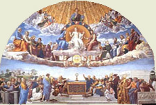
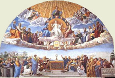

|  |
|---|
Textum Taurini 1953 editum
et automato translatum a Roberto Busa SJ in taenias magneticas
denuo recognovit Enrique Alarcón atque instruxit


|  |
|---|


[85702] Catena in Mc., cap. 14 l. 1 Hieronymus. Nunc aspergamus librum nostrum de sanguine, et limina domorum, et funem coccineum circumdemus domui orationis nostrae, et coccum in manu nostra ut Zaram ligemus, ut vaccam rufam in valle occisam enarrare possimus. De Christi enim occisione narraturus Evangelista praemittit erat autem Pascha et azyma post biduum. Beda. Pascha, quod Hebraice dicitur phase, non a passione, ut plerique arbitrantur, sed a transitu nominatur: eo quod exterminator videns sanguinem in foribus Israelitarum, pertransierit, nec percusserit eos; vel ipse dominus praebens auxilium populo suo, desuper ambulavit. Hieronymus. Vel phase transitus interpretatur, Pascha vero immolatio. In immolatione agni et transitu populi per mare vel Aegyptum, praefiguratur passio Christi, et redemptio populi de Inferno, quando nos post biduum visitat, idest plenissima luna, aetate Christi perfecta: ut nec cum aliqua parte tenebrosa carnes agni immaculati, qui tollit peccata mundi, in una domo, quae est Ecclesia Catholica, calceati caritate et armati virtute comedamus. Beda. Hoc autem, iuxta veteris testamenti Scripturam, inter Pascha et azyma distat, quod Pascha ipse solus dies appellatur, in quo agnus occidebatur ad vesperam, hoc est quartadecima luna mensis primi; decima quinta autem luna, quando egressum est de Aegypto, succedebat festivitas azymorum, quae septem diebus, idest usque ad vigesimum primum diem eiusdem mensis ad vesperam est statuta solemnitas. Verum Evangelistae indifferenter et diem azymorum pro Pascha, et pro diebus azymorum Pascha ponere solent; unde et Marcus hic dicit erat autem Pascha, et azyma post biduum: quia et Paschae dies in azymis panibus est celebrari praeceptus; et nos quasi Pascha perpetuum facientes, semper ex hoc mundo transire praecipimur. Hieronymus. A principibus autem egressa est iniquitas in Babylone, qui templum et vasa et se purificare secundum legem ad esum agni debuerant; unde sequitur et quaerebant summi sacerdotes et Scribae quomodo eum dolo tenerent et occiderent. Occiso autem capite totum corpus enerve efficitur: unde miseri faciunt quod caput moriatur. Vitant autem diem festum, quod convenit illis: non enim est festivitas his qui vitam et misericordiam perdiderunt; unde sequitur dicebant autem: non in die festo, ne forte tumultus fieret in populo. Beda. Non quidem metuentes seditionem, ut simplex sermo demonstrat; sed caventes ne auxilio populi de suis manibus tolleretur. Theophylactus. Ipse tamen Christus tempus sibi constituerat passionis: voluit enim in Paschate crucifigi, quia ipse verum erat Pascha.
[85703] Catena in Mc., cap. 14 l. 2 Beda. Passurus dominus pro toto mundo, et universas nationes suo sanguine redempturus, moratur in Bethania, idest in domo obedientiae; unde dicitur et cum esset Bethaniae in domo Simonis leprosi, et recumberet, venit mulier. Hieronymus. Hinnulus enim cervorum semper ad lectum suum redit, idest filius patri obediens usque ad mortem, a nobis obedientiam petit. Beda. Dicit autem Simonis leprosi, non quod leprosus illo tempore permaneret, sed quod antea leprosus, postea a salvatore mundatus est, nomine pristino permanente, ut virtus curantis appareat. Theophylactus. Quamvis autem quatuor Evangelistae unguentum mulieris commemorent, non est tamen una, sed duae: una quidem quae describitur a Ioanne, quae soror est Lazari, quae scilicet ante sex dies Paschae unxit pedes Iesu; alia vero quae a reliquis tribus Evangelistis describitur. Adhuc autem si attendas, invenies has tres esse. A Ioanne enim una describitur, altera vero a Luca, a duobus vero reliquis altera. Quae enim a Luca describitur meretrix esse, dicitur in medio praedicationis tempore ad Iesum venisse. Haec vero quae a Matthaeo et Marco describitur, dicitur in tempore passionis venisse, non confitentem se peccatricem. Augustinus de Cons. Evang. Ego autem nihil aliud intelligendum arbitror, nisi quod non aliam quidem fuisse mulierem, quae peccatrix tunc accessit ad pedes Iesu, sed eamdem Mariam bis hoc fecisse: semel scilicet quod Lucas narravit, cum primo accedens cum humilitate et lacrymis, meruit peccatorum remissionem: nam et hoc Ioannes commemoravit, cum de Lazaro resuscitando coepisset loqui, antequam veniret in Bethaniam, dicens: Maria autem erat quae unxit dominum unguento, et extersit pedes eius capillis suis, cuius frater Lazarus infirmabatur. Quod autem in Bethania rursus fecit, aliud est quod ad Lucae narrationem non pertinet; sed pariter narratur a reliquis tribus. Quod ergo Matthaeus et Marcus caput domini unguento illo perfusum dicunt, Ioannes autem pedes, accipiamus non solum caput, sed etiam pedes domini perfudisse mulierem; nisi forte quoniam Marcus fracto alabastro perfusum caput commemorat, tam quisquam calumniosus est ut in vase fracto neget aliquid remanere potuisse, unde etiam pedes domini perfunderet. Sed religiosius contendet aliquis non ita fractum esse ut totum effunderet; vel prius accipiat perfusos pedes, antequam illud fractum esset, ut in integro remaneret unde etiam caput perfunderetur. Beda. Est autem alabastrum genus marmoris candidi, variis coloribus intertincti, quod ad vasa unguentaria cavare solent, eo quod optime servare ea incorrupta dicatur. Nardus vero est frutex aromaticus grandi, ut aiunt, et crassa radice, sed brevi ac nigra, fragilique. Quamvis autem pinguis sit, tamen redolet ut cupressus, aspero sapore, folio parvo densoque, cuius cacumina in aristas se spargunt; ideoque gemina dote pigmentarii nardi spicas ac folia celebrant. Et hoc est quod ait Marcus unguenti nardi pistici pretiosi: quia videlicet unguentum illud quod attulit Maria domino, non solum de radice confectum est nardi, verum etiam, quo pretiosius esset, spicarum quoque et foliorum eius, adiectione odoris ac virtutis illius erat accumulata gratia. Theophylactus. Vel, sicut in Graeco dicitur, nardi pistici, idest fidelis, eo quod unguentum nardi erat absque dolo cum fide confectum. Augustinus de Cons. Evang. Potest autem videri contrarium quod Matthaeus et Marcus posteaquam dixerunt Pascha et biduum, deinde commemoraverunt quod erat Iesus in Bethania, ubi de illo pretioso unguento dicitur; Ioannes autem ante sex dies Paschae dicit Iesum venisse in Bethaniam, de eodem unguento narraturus. Sed qui ita moventur, non intelligunt, Matthaeum et Marcum illud quod in Bethania de unguento factum erat, non post illam praedicationem de biduo, sed adhuc cum sex dies essent ante Pascha recapitulando posuisse. Hieronymus. Mystice autem Simon leprosus mundum infidelem primo, et postea fidelem significat; mulier autem cum alabastro ecclesiasticam fidem, quae dicit: nardus mea dedit odorem suum. Pistica nardus dicitur, idest fidelis et pretiosa. Domus impleta odore, caelum et terra est. Fractum alabastrum carnale desiderium est, quod frangitur ad caput, ex quo omne corpus compaginatum est; recumbente ipso, idest humiliante se, ut eum tangeret fides peccatricis, quae de pedibus ascendit ad caput, et ad pedes a capite descendit per fidem, idest ad Christum et ad membra eius. Sequitur erant autem quidam indigne ferentes intra semetipsos, et dicentes: ut quid perditio ista? Per synecdochen dicitur unus pro multis, et multi pro uno. Perditus enim Iudas de salute perditionem invenit, et in vite fructifera mortis laqueus nascitur. Sub praetextu autem avaritiae mysterium fidei loquitur: etenim nostra fides trecentis emitur denariis, in decem sensibus, interioribus scilicet et exterioribus, scilicet per corpus et animam et spiritum triplicatis. Beda. Quod autem dicit et fremuerunt in eam, nequaquam debemus de diligentibus Christum apostolis dictum credere, sed de Iuda potius sub numero plurali. Theophylactus. Vel convenienter videtur innui quod discipuli plures mulierem arguerunt, eo quod saepe Christum audierant de eleemosyna docentem. Iudas vero non eadem intentione indigne tulit, sed propter amorem pecuniae, et turpe lucrum; unde et Ioannes ipsum solum commemorat, tamquam fraudulenta intentione mulierem arguentem. Dicit autem et fremuerunt in eam; idest molesti erant ei, exprobrantes, et iniurias inferentes. Arguit autem dominus discipulos, eo quod desiderium impediunt mulieris; unde sequitur Iesus autem dixit: sinite eam: quid illi molesti estis? Postquam enim munus obtulerat, illam per opprobria pervertebant. Origenes super Matth. Doluerunt enim de perditione unguenti, quod poterat venumdari multo pretio, et dari pauperibus; tamen non debebat fieri hoc, quia conveniens erat ut super caput Christi funderetur sancta et decenti infusione; unde sequitur bonum opus operata est in me. Usque adeo autem efficax est laus huius operis boni, ut exhortetur nos omnes odoriferis et pretiosis operibus implere domini caput, ut de nobis dicatur quod bonum opus fecimus super caput Christi; quia semper quidem habemus, quamdiu in hac vita sumus, pauperes nobiscum, et opus habentes cura eorum qui profecerunt in verbo, et divites facti sunt in sapientia Dei; non autem possunt sufficere ut semper diebus et noctibus habeant secum filium Dei, idest verbum et sapientiam Dei; sequitur enim semper enim pauperes habetis vobiscum, et cum volueritis potestis illis benefacere; me autem non semper habebitis. Beda. Mihi quidem videtur in hoc loco de praesentia corporali locutus, quod nequaquam cum eis ita futurus sit post resurrectionem quomodo tunc in omni convictu et familiaritate. Hieronymus. Dicit etiam bonum opus operata est in me: quia qui credit in Deum, reputatur ei ad iustitiam. Aliud est enim credere ei, et aliud in eum; idest, totum eicere se in illum. Sequitur quod habuit, idest quod potuit, hoc fecit: praevenit ungere corpus meum in sepulturam. Beda. Quasi diceret: vos putatis perditionem esse unguenti: officium sepulturae est. Theophylactus. Praevenit enim, quasi a Deo ducta, ungere corpus meum, in signum sepulturae: in quo proditorem confundit, ac si ei diceret: qua conscientia mulierem confundis, quae in sepulturam corpus meum ungit; teipsum vero non confundis, qui me in mortem trades? Prophetizat autem dominus consequenter duas prophetias: scilicet quod Evangelium praedicabitur in universo mundo, et quod opus mulieris laudabitur; unde sequitur amen dico vobis: ubicumque praedicatum fuerit, et cetera. Beda. Notandum autem, quod sicut Maria gloriam adepta est in toto orbe de obsequio quod domino exhibuit: ita e converso ille qui obsequio eius detrahere non timuit, longe lateque infamatus est; sed dominus bonum laude digna remunerans, futuras impii contumelias tacendo praeteriit.
[85704] Catena in Mc., cap. 14 l. 3 Beda. Infelix Iudas damnum quod ex effusione unguenti fecisse credebat, vult magistri pretio compensare; unde dicitur et Iudas Iscariotes unus de duodecim abiit ad summos sacerdotes, ut proderet eum illis. Chrysostomus in Serm. de passione. Quid mihi eius patriam dicis? Utinam ipsum quoque nescire licuisset. Sed alter erat discipulus, qui Iudas Iacobi Zelotes vocabatur: et ne appellatione cognominis fiat confusio personarum, propterea hunc ab illo separavit. Non autem dixit: Iudas proditor, ut doceat detractiones nescire, et accusationes declinare. Quod autem dicit unus de duodecim, auget detestabilitatem proditoris: nam et alii discipuli erant, qui fuerant numero septuaginta; sed illi non intimi, non tanta confidentia sociati sunt; isti autem duodecim fuerunt comprobati: haec erat caterva legalis, de qua proditor malignus exivit. Hieronymus. Unus tamen erat de duodecim numero, non unus merito; unus corpore, non unus animo. Abiit autem ad principes postquam exiit, et intravit in eum Satanas: unumquodque animal ad simile sibi iungitur. Beda. Quod autem dixit abiit, ostendit eum non a principibus invitatum, non ulla necessitate constrictum; sed sponte propria sceleratae mentis inisse consilium. Theophylactus. Dicit autem ut proderet eum illis; idest, ut annuntiaret illis quando solus existeret. Timebant autem in eum irruere quando docebat propter turbam. Hieronymus. Promittit autem se tradere, ut magister eius Diabolus ante dicebat: tibi dabo potestatem hanc universam. Sequitur qui audientes gavisi sunt, et promiserunt ei pecuniam se daturos. Promittunt quidem pecuniam, et amittunt vitam, quam ipse recipit cum vitam amittit. Chrysostomus in Serm. de passione. O dementiam, immo cupiditatem proditoris. Cuncta enim mala cupiditas procreavit: nam cupiditas captas animas retinet, et omnibus nodis alligatas constringit, et rerum oblivionem imponit, et alienationem mentis ostendit. Ab hac Iudas captivus, cupiditatis insania, conversationis, mensae, discipulatus, admonitionis, suasionis oblitus est; nam sequitur et quaerebat quomodo eum opportune traderet. Hieronymus. Sed opportunitas doli numquam invenitur, ut non vindicetur hic aut illic. Beda. Multi hodie scelus Iudae, quod dominum ac magistrum Deumque suum pecunia vendiderit, velut immane et nefarium exhorrent, nec tamen cavent: nam cum pro muneribus, caritatis et veritatis iura spernunt, Deum, qui est caritas et veritas, produnt.
[85705] Catena in Mc., cap. 14 l. 4 Chrysostomus in Serm. de passione. Quando Iudas de traditione tractabat, alii discipuli sunt de praeparatione Paschae solliciti; unde dicitur et primo die azymorum, quando Pascha immolabant, dicunt ei discipuli: quo vis eamus et paremus tibi comedere Pascha? Beda. Primum diem azymorum quartumdecimum diem primi mensis appellat, quando fermento abiecto, immolare, idest agnum occidere, solebant ad vesperam; quod exponens apostolus ait: Pascha nostrum immolatus est Christus, qui licet die sequenti, idest quintadecima luna, sit crucifixus, attamen nocte qua agnus immolabatur, et corporis sanguinisque sui tradens mysteria celebranda, et a Iudaeis tentus ac ligatus, ipsius immolationis, hoc est passionis suae, sacravit exordium. Hieronymus. Azyma vero, quae cum amaritudine, idest lactucis agrestibus, manducantur, redemptio nostra est; amaritudo vero passio domini. Theophylactus. Ex hoc autem quod dicunt discipuli quo vis eamus? Manifeste videtur quod Christus hospitium aliquod non habebat; sed neque discipuli proprias domos: si enim habuissent, duxissent eum ad illas. Hieronymus. Dicunt etiam quo vis eamus? Ut cum voluntate Dei dirigamus gressus nostros. Dominus autem indicat cum quo manducat Pascha; et more suo mittit duos, quod supra exposuimus; unde sequitur et mittit duos ex discipulis suis, et dicit eis: ite in civitatem. Theophylactus. Mittit quidem ex discipulis suis, Petrum scilicet et Ioannem, ut Lucas dicit, ad ignotum hominem, innuens ex hoc quod posset non pati. Nam qui mentem ignoti movit ut ipsos reciperet, quid non operaretur in aliis? Dat etiam eis signum, ut domum scilicet invenirent, cum subdit et occurret vobis homo lagenam aquae baiulans. Augustinus de Cons. Evang. Marcus lagenam dicit, quam Lucas amphoram: ille vasis genus, iste modum significavit; uterque veritatem sententiae custodivit. Beda. Indicium autem praesentiae divinitatis est quod cum discipulis loquens, quid alibi futurum sit novit; unde sequitur et abierunt discipuli eius, et venerunt in civitatem, et invenerunt sicut dixit illis, et paraverunt Pascha. Chrysostomus in Serm. de passione. Non illud quod nostrum, sed interim Iudaeorum; illud autem quod nostrum est non solum constituit, sed ipse factus est Pascha. Sed et cur illud manducavit? Quia factus est sub lege, ut eos qui sub lege erant redimeret, et ipse legi requiem daret: et ut nemo dicat quod ideo eam evacuaverit quia eam implere, ut molestam et arduam, non valuit, ipse prius eam complevit, et sic fecit eam requiescere. Hieronymus. Mystice autem civitas Ecclesia est, quae muro fidei cingitur: homo occurrens populus primitivus est; amphora aquae lex litterae. Beda. Vel aqua lavacrum gratiae, lagena fragilitatem designat eorum per quos eadem erat gratia mundo monstranda. Theophylactus. Lagenam aquae portat qui baptizatus est; qui autem Baptisma baiulat, venit ad requiem secundum rationem vivens, et sicut in domo requie potitur: unde subdit sequimini eum. Hieronymus. Qui scilicet ducit in altum, ubi est refectio Christi. Dominus domus Petrus apostolus est, cui dominus domum suam credidit, ut sit una fides sub uno pastore; coenaculum grande Ecclesia magna est, in qua narratur nomen domini, strata varietate virtutum et linguarum. Beda. Vel coenaculum magnum spiritualiter lex est, quae de angustiis litterae egrediens, et sublimi loco, idest in alto mentis solario, recipit salvatorem. Consulte autem sive aquae baiuli sive domini domus sunt praetermissa vocabula, ut omnibus verum Pascha celebrare volentibus, hoc est Christi sacramentis imbui, eumque suae mentis hospitio suscipere quaerentibus, facultas danda signetur. Theophylactus. Vel dominus domus intellectus est, qui ostendit coenaculum grande, idest altitudinem intelligentiarum; quod etsi altum sit, tamen nihil habet vanae gloriae et tumoris; sed sternitur, et planum fit humilitate. Ibi autem, idest in tali mente, Pascha Christo paratur, a Petro scilicet et Ioanne, idest ab actione et contemplatione.
[85706] Catena in Mc., cap. 14 l. 5 Beda. Dominus qui de sua passione praedixerat, etiam de proditore praedicit, dans locum poenitentiae; ut cum intellexisset sciri cogitationes suas, poeniteret eum facti sui; unde dicitur vespere autem facto, venit cum duodecim, et discumbentibus eis et manducantibus ait Iesus: amen dico vobis, quia unus ex vobis me tradet, qui manducat mecum. Chrysostomus in Serm. de passione. Ubi patet quod non aperte eum omnibus publicabat, ne impudentiorem eum faceret, nec etiam penitus silentio praeteribat, ne celari arbitratus, audacter ad proditionem properaret. Theophylactus. Sed quomodo discumbentes coenabant, cum lex praeciperet quod stantes erecti deberent Pascha comedere? Probabile autem est prius eos adimplesse Pascha legale, deinde discubuisse, incipiente eo proprium tradere Pascha. Hieronymus. Vespera autem diei, vesperam indicat mundi: circa undecimam namque horam veniunt novissimi qui primi denarium aeternae vitae accipiunt. Omnes igitur discipuli tanguntur a domino; ut fiat harmonia citharae, omnes nervi bene suspensi consona voce respondent; nam sequitur at illi coeperunt contristari, et dicere ei singillatim: numquid ego? Unus autem remissus, et pecuniae amore madefactus, dixit: numquid ego sum, Rabbi? Sicut in Matthaeo legitur. Theophylactus. Coeperunt autem alii discipuli contristari propter domini verbum: nam etsi extra hanc existerent passionem, magis tamen credunt illi qui omnium novit corda, quam sibi. Sequitur qui ait illis: unus ex duodecim, qui intingit mecum manum in catino. Beda. Iudas scilicet qui, ceteris contristatis et retrahentibus manum, cum magistro manum mittit in catinum: et quia prius dixerat unus ex vobis me tradet, et perseverat proditor in malo, manifestius arguit; et tamen nomen proprium non designat. Hieronymus. Dicit autem unus de duodecim, quasi ab eis separatus: separat enim seorsum lupus ovem quam capit. Ovis quae de ovili egreditur, lupi morsibus patet. Iudas autem nec primo, nec secundo correptus a proditione retrahit pedem; unde poena praedicitur, ut quem pudor non vicerat, corrigant denuntiata supplicia; et hoc est quod subditur et filius quidem hominis vadit sicut scriptum est de eo. Theophylactus. Per hoc quod dicitur vadit, ostenditur quod mors Christi fuit voluntaria, et non necessaria. Hieronymus. Sed quia multi bonum, ut Iudas, faciunt, sed omnino illis non proficit, recte subditur vae autem homini illi per quem filius hominis tradetur. Beda. Sed et hodie quoque in sempiternum vae illi homini qui ad mensam domini malignus accedit. Etenim ille in exemplum Iudae filium hominis tradit, non quidem Iudaeis peccatoribus, sed tamen peccatoribus membris suis. Sequitur bonum erat ei, si non esset natus homo ille. Hieronymus. Scilicet intimo latens utero materno; melius enim est non esse, quam ad tormenta esse. Theophylactus. Quantum enim ex fine melius fuisset ei quod esset, si non proditor existeret; nam Deus fecit ipsum ad opera bona; sed postquam ad tantam devenit malitiam, melius fuisset ei si natus non fuisset.
[85707] Catena in Mc., cap. 14 l. 6 Beda. Finitis Paschae veteris solemniis transiit ad novum, ut scilicet pro carne agni ac sanguine, sui corporis sanguinisque sacramentum substitueret; unde dicitur et manducantibus illis accepit Iesus panem: ut scilicet ipsum se esse monstraret, cui iuravit dominus: tu es sacerdos in aeternum secundum ordinem Melchisedech. Sequitur et benedicens fregit. Theophylactus. Idest, gratias agens fregit: quod et nos facimus, orationes superaddentes. Beda. Frangit etiam ipse panem quem discipulis porrigit, ut ostendat corporis sui fractionem non absque sua sponte vel procuratione futuram; quem etiam benedixit, quia naturam humanam quam passurus assumpsit, ipse una cum patre et spiritu sancto gratia divinae virtutis implevit. Benedixit panem ac fregit: quia hominem assumptum ita morti subdere dignatus est, ut ei divinae immortalitatis inesse potentiam demonstraret; ideoque velocius eum a morte resuscitandum esse doceret. Sequitur et dedit eis, et ait: sumite: hoc est corpus meum. Theophylactus. Hoc scilicet quod nunc do, et quod nunc sumitis. Non autem panis figura tantum corporis Christi est, sed in proprium Christi corpus transmutatur: nam dominus ait: panis quem ego dabo, caro mea est; sed tamen caro Christi non videtur propter nostram infirmitatem: panis enim et vinum de nostra consuetudine est; si vero carnem et sanguinem cerneremus, sumere non sustineremus. Propter hoc dominus nostrae infirmitati condescendens, species panis et vini conservat; sed panem et vinum in veritatem convertit carnis et sanguinis. Chrysostomus in Serm. de passione. Et nunc etiam ille praesto est Christus, qui illam ornavit mensam, ipse istam quoque consecrat. Non enim homo est qui proposita corpus Christi facit et sanguinem; sed ille qui pro nobis crucifixus est Christus. Sacerdotis ore verba proferuntur, et Dei virtute consecrantur et gratia. Hoc verbo quod dicit hoc est corpus meum, proposita consecrantur; et sicut illa vox quae dicit: crescite et multiplicamini, et replete terram, semel quidem dicta est, sed omni tempore sentit effectum ad generationem operante natura, ita et vox ista semel quidem dicta est, sed per omnes mensas Ecclesiae usque in hodiernum diem et usque ad eius adventum praestat sacrificio firmitatem. Hieronymus. Mystice autem in panem transfigurat dominus corpus suum, quod est Ecclesia praesens, quae accipitur in fide, benedicitur in numero, frangitur in passionibus, datur in exemplis, sumitur in doctrinis, formatur in sanguinem suum in calice vino et aqua commixtum: ut alio purgemur a culpis, alio redimamur a poenis. Sanguine namque agni servantur domus a percussione Angeli, et aqua maris rubri extinguuntur inimici; quae sunt mysteria Ecclesiae Christi; unde sequitur et accepto calice, gratias agens dedit eis; gratia enim et non meritis salvati sumus a Deo. Gregorius Moralium. Cum appropinquaret etiam passioni, accepto pane, gratias egisse perhibetur. Gratias itaque egit qui flagella alienae iniquitatis suscepit; et qui nil percussione dignum exhibuit, humiliter in passione benedicit, ut hinc ostendat quid unusquisque in flagello culpae facere debeat, si ipse aequanimiter flagella culpae portat alienae: ut hinc etiam ostendat quid in correctione faciat subditus, si in flagello positus patri gratias egit aequalis. Beda. Quia et nos in Christo, et in nobis Christum manere oportet, vinum dominici calicis aqua miscetur. Attestante enim Ioanne, aquae populi sunt; et neque aquam solam, neque solum vinum cuiquam licet offerre, ne talis oblatio caput a membris secernendum esse significet, et vel Christum sine nostrae redemptionis amore pati potuisse, vel nos sine illius passione salvari ac posse offerri contingat. Sequitur et biberunt ex illo omnes. Hieronymus. Ebrietas felix, satietas salutaris, quae quanto copiosius sumitur, tanto sobrietatem mentis donare dignatur. Theophylactus. Quidam autem dicunt Iudam mysteriorum non fuisse participem, sed quod exiverit antequam dominus mysteria largiretur. Alii etiam dicunt, quod illi tradidit de illo mysterio. Chrysostomus in Serm. de passione. Christus enim sanguinem ei qui eum vendidit offerebat, ut haberet remissionem peccatorum, si tamen impius existere noluisset. Hieronymus. Bibit ergo Iudas, sed non saturatur; nec sitim extinguit ignis aeterni, quia indigne sumit mysteria Christi. Sunt enim in Ecclesia quos sacrificium non emundat, sed eos cogitatio insipiens perducit ad culpas, qui se coenosis crudelitatis foetoribus miscuerunt. Chrysostomus. Nullus ergo sit Iudas in domini mensa. Hoc sacrificium cibus spiritualis est: nam sicut corporalis cibus, cum ventrem invenerit adversis humoribus occupari, amplius laedit, ita est et iste spiritualis cibus; si aliquem reperit malignitate pollutum, magis eum perdit, non sua natura, sed accipientis vitio. Pura igitur sit mens in omnibus, pura cogitatio, quia et sacrificium purum est. Sequitur et ait illis: hic est sanguis meus novi testamenti. Beda. Hoc ad distinctionem respicit veteris testamenti, quod hircorum et vitulorum est sanguine dedicatum, dicente inter aspergendum legislatore: hic est sanguis testamenti, quod mandavit ad vos Deus. Sequitur qui pro multis effundetur. Hieronymus. Non enim omnes emundat. Sequitur amen dico vobis, quod iam non bibam de genimine vitis usque in diem illum, cum illud bibam novum in regno Dei. Theophylactus. Quasi diceret: non bibam de vino usque ad resurrectionem: regnum enim resurrectionem vocat, quasi tunc regnaverit contra mortem. Post resurrectionem vero bibit cum discipulis et comedit, ostendens quod idem ipse esset qui passus est. Novum autem bibit illud, idest novo quodam modo et alieno: non enim corpus habebat passibile indigens cibo, sed immortale et incorruptibile. Intelligendum est autem et sic: vitis est ipse dominus, genimen vitis mysteria et intellectus occultus; quem ipse generat qui docet hominem scientiam. In regno autem Dei, idest in futuro saeculo, bibet cum suis discipulis mysteria et sapientiam, nova quaedam nos docens, et revelans quae nunc occultat. Beda. Vel aliter. Vitem sive vineam domini appellatam esse synagogam Isaias testatur dicens: vinea domini Sabaoth, domus Israel est. Iturus ergo dominus ad passionem ait iam non bibam de genimine vitis: ac si aperte dicat: non ultra carnalibus synagogae caeremoniis delectabor, in quibus etiam ista paschalis agni sacra locum tenuere praecipuum. Aderit enim tempus meae resurrectionis; aderit dies ille cum in regno Dei positus, idest gloria vitae immortalis sublimatus, de salute eiusdem populi, fonte gratiae spiritualis regenerati, vobiscum gaudio perfundar. Hieronymus. Considerandum autem, quod hic dominus mutat tantum sacrificium, sed non mutat tempus, ut nos nunquam coenam domini ante quartamdecimam lunam faciamus. Qui facit in quartadecima resurrectionem, in undecima luna coenam domini faciet; quod nunquam in testamento veteri nec in novo factum est.
[85708] Catena in Mc., cap. 14 l. 7 Hilarius. Sicut gratias egerunt antequam biberent, ita etiam gratias agunt et postquam biberunt; unde dicitur et hymno dicto exierunt in montem oliveti: ut scilicet addiscas et ante cibum et post cibum gratiarum reddere actiones. Hieronymus. Hymnum enim dicit laudem domini, ut est in Psalmo 21, 27-28: edent pauperes et saturabuntur, et laudabunt dominum qui requirunt eum; et adoraverunt et manducaverunt omnes pingues terrae. Theophylactus. Simul etiam et hic ostendit quod amplectibile erat sibi pro nobis mori: quia cum tradendus erat, Deum laudare dignatus est. Docet etiam nos, cum in angustias incidimus propter multorum salutem, non contristari, sed Deo gratias agere, qui in nostra tribulatione operatur multorum salutem. Beda. Potest etiam hymnus ille intelligi quem dominus, secundum Ioannem, patri gratias agens decantabat, in quo et pro seipso et pro discipulis et pro eis qui per verbum ipsorum credituri erant, elevatis sursum oculis, precabatur. Theophylactus. Exivit autem in montem, ut ad eum solitarium existentem accedentes, ipsum caperent absque tumultu. Si enim accessissent cum in civitate manebat, forte fuisset multitudo populi conturbata; et tunc manifeste occasionem inimici captantes viderentur ipsum iuste interficere tamquam populum concitantem. Beda. Pulchre etiam dominus discipulos sacramentis imbutos in montem educit olivarum, ut typice designet nos per acceptionem sacramentorum ad altiora virtutum dona et charismata sancti spiritus, quibus in corde perungamur, ascendere debere. Hieronymus. In monte etiam oliveti Iesus tenetur, unde ad caelos ascendit; ut nos sciamus quia inde ascendimus ad caelos unde vigilamus et oramus, et ligamur, nec repugnamus in terra. Beda. Praedicit autem dominus discipulis quid passuri sunt; ut cum passi fuerint, non desperent salutem, sed agentes poenitentiam liberentur; unde sequitur et ait illis Iesus: omnes scandalizabimini in me in nocte ista. Hieronymus. Omnes quidem cadunt, sed non omnes iacent. Numquid enim qui dormit non adiciet ut resurgat? Carnale est cadere, sed diabolicum est iacere. Theophylactus. Permisit autem eos dominus cadere, ut non in seipsis confidant; et ne videretur hoc quod praedixerat ex quodam argumento apparenti praedixisse, inducit testimonium Zachariae prophetae; unde sequitur percutiam pastorem, et dispergentur oves gregis. Beda. Hoc aliis verbis in Zacharia propheta scriptum est et ex persona prophetae ad dominum dicitur: percute pastorem, et dispergentur oves. Propheta enim postulat passionem domini; pater respondet: percutiam pastorem, precibus inferiorum. Filius a patre mittitur, et percutitur; idest incarnatur et patitur. Theophylactus. Dicit autem pater percutiam pastorem, quia ipsum percuti dimisit. Oves discipulos dicit, quasi innocentes et quasi absque malitia. Ultimo consolationem inducit, dicens sed postquam resurrexero, praecedam vos in Galilaeam. Hieronymus. In quo vera promittitur resurrectio, ut spes non extinguatur. Sequitur Petrus autem ait ei: et si omnes scandalizati fuerint, sed non ego. Ecce avis sine pennis in altum volare nititur: sed corpus aggravat animam, ut timore humanae mortis timor domini superetur. Beda. Et Petrus ergo de ardore fidei promittebat, et salvator quasi Deus futura noverat; unde sequitur et ait illi Iesus: amen dico tibi, quia tu hodie in nocte hac, priusquam gallus vocem bis dederit, ter me es negaturus. Augustinus de Cons. Evang. Cum omnes Evangelistae dicant praedixisse dominum quod eum Petrus esset negaturus antequam gallus cantaret; Marcus hoc solum narravit expressius: unde nonnullis videtur non congruere ceteris, quia parum attendunt. Tota enim Petri negatio trina est: quae si tota post primum galli cantum inciperet, falsum dixisse viderentur tres alii Evangelistae: quod scilicet antequam gallus cantaret, ter eum esset negaturus. Rursus si totam trinam negationem ante peregisset quam cantare gallus inciperet, superfluo dixisset Marcus ex persona domini priusquam gallus bis vocem dederit, ter me negaturus es. Sed quia ante primum galli cantum coepta est illa trina negatio, attenderunt illi tres non quando eam completurus esset Petrus, sed quanta futura esset, idest trina, et quando coeptura, idest ante galli cantum: quamquam in animo eius et ante primum galli cantum tota concepta est. Marcus autem de ipsarum vocum intervallo planius elocutus est. Theophylactus. Quod sic intelligitur. Petrus semel negavit; deinde gallus cantavit; negante vero eo duabus aliis negationibus, tunc gallus secundo vocem emisit. Hieronymus. Gallus lucis nuntius quis est nisi spiritus sanctus? Cuius voce in prophetia et in apostolis nos de trina negatione excitamur ad amarissimos post lapsum fletus, qui male cogitavimus de Deo, et male locuti sumus ad proximos, et male fecimus ad nosmetipsos. Beda. Fides autem apostoli Petri et ardens affectus ad dominum consequenter ostenditur; sequitur enim at ille amplius loquebatur: et si oportuerit me simul commori tibi, non te negabo. Theophylactus. Fervorem etiam intrepidum et alii discipuli ostenderunt; nam sequitur similiter autem et omnes dicebant; sed tamen resistebant veritati, quam Christus praedixerat.
[85709] Catena in Mc., cap. 14 l. 8 Glossa. Postquam dominus scandalum discipulorum praedixerat, nunc Evangelista narrat de oratione ipsius, in qua pro discipulis creditur orasse: et primo describens locum orationis, dicit et veniunt in praedium cui nomen Gethsemani. Beda. Monstratur usque hodie locus Gethsemani, in quo dominus oravit ad radices montis oliveti. Interpretatur autem Gethsemani vallis pinguium, sive pinguedinum. Cum autem dominus in monte orat, nos docet, sublimia orando inquiri debere. At cum in valle pinguedinis orat, insinuat nobis humilitatem semper in orationibus, et internae pinguedinem dilectionis esse servandam. Ipse etiam per vallem humilitatis et pinguedinem caritatis pro nobis mortem subiit. Hieronymus. In valle etiam pinguedinum tauri pingues obsederunt eum. Sequitur et ait discipulis suis: sedete hic donec orem. Separantur in oratione qui separantur in passione: quia ille orat, illi dormiunt, pigredine cordis oppressi. Theophylactus. Singulariter etiam erat consuetudo illi semper orare, formam nobis tradens ut silentium et solitudinem in orationibus requiramus. Sequitur et assumit Petrum et Iacobum et Ioannem secum. Illos tres tantum assumit qui gloriae eius in monte Thabor inspectores extiterant, ut qui gloriosa viderant, viderent et tristia, et addiscerent quod verus erat homo in hoc quod tristatur; unde sequitur et coepit pavere et taedere. Quia enim totum assumpserat hominem, assumpsit et naturales proprietates hominis, pavere et taedere et contristari naturaliter; nam homines naturaliter inviti tendunt ad mortem; unde sequitur et ait illis: tristis est anima mea usque ad mortem. Beda. Quasi Deus in corpore constitutus fragilitatem carnis exponit, ut eorum qui sacramentum incarnationis obiurgant excluderetur impietas; nam qui corpus suscepit, omnia debuit suscipere quae corporis sunt, ut esuriret, sitiret, angeretur, contristaretur: divinitas enim per hos commutari nescit affectus. Theophylactus. Quidam autem hoc sic intellexerunt, quasi dicat: tristor enim, non quod mori debeo, sed quod Israelitae propinqui mei me crucifixuri sunt, ac per hoc a regno Dei debent excludi. Hieronymus. In hoc etiam pavere et tristari docemur ante iudicium mortis, quod non possumus per nos dicere, sed per illum: venit princeps mundi huius, et in me non habet quicquam. Sequitur sustinete hic, et vigilate. Beda. Non a somno dormitionis prohibet, cuius tempus non erat imminente discrimine, sed a somno infidelitatis et torpore mentis. Paululum autem procedens ruit in faciem suam, et humilitatem mentis habitu carnis ostendit; unde sequitur et cum processisset paululum, procidit super terram, et orabat ut, si fieri posset, transiret ab eo hora. Augustinus de Cons. Evang. Non dixit: si facere posset, sed si fieri posset; fieri enim potest quod ille voluerit. Sic itaque dictum est si fieri potest, ac si diceretur: si vellet. Et ne quis putaret eum patris minuisse potestatem, manifestavit quo intellectu accipiendum sit quod dictum est: nam sequitur et dixit: abba, pater, omnia tibi possibilia sunt: in quo satis ostendit non ex impossibilitate, sed ex voluntate patris dictum esse si fieri potest. Quod autem Marcus non solum pater, sed abba, pater, eum dixisse commemorat; hoc est abba Hebraice, quod Latine pater. Et fortasse dominus propter aliquod sacramentum utrumque dixit, volens ostendere se illam tristis personam in persona sui corporis, idest Ecclesiae, suscepisse, cui factus est angularis lapis, venientibus ad eum partim ex Hebraeis, ad quos pertinet quod ait abba, partim ex gentibus, ad quos pertinet quod ait pater. Beda. Orat autem transire calicem, ut ostendat vere quod homo erat; unde subdit transfer calicem hunc a me. Reminiscens autem et propter quid missus est, perficit dispensationem ad quam missus est, et clamat sed non quod ego volo, sed quod tu; quasi dicat: si moritur mors me non moriente secundum carnem, transeat calix; verum, quia non aliter hoc fiet, non quod ego volo, sed quod tu. Multi adhuc contristantur futura morte, sed habeant rectum cor, vitent mortem quam possunt; sed si non possunt, dicant id quod propter nos dominus dixit. Hieronymus. Ex quo etiam usque in finem non cessat nos docere patribus obedire, et voluntatem eorum voluntati nostrae praeponere. Sequitur et venit, et invenit eos dormientes. Sicut enim dormiunt mente, sic et corpore. Post orationem autem dominus veniens, et videns discipulos dormientes, Petrum solum increpat; unde sequitur et ait Petro: Simon, dormis? Non potuisti una hora vigilare mecum? Quasi dicat: qui una hora non potuisti mecum vigilare, quomodo mortem spernes tu qui spondes mori mecum? Sequitur vigilate et orate, ut non intretis in tentationem, scilicet negandi me. Beda. Non ait: orate ne tentemini, quia impossibile est humanam animam non tentari; sed ne intretis in tentationem; hoc est, ne vos tentatio superet. Hieronymus. In tentationem autem intrare dicitur qui orare negligit. Sequitur spiritus quidem promptus est, caro autem infirma. Theophylactus. Quasi dicat: spiritus quidem vester promptus est ad me non negandum, et propterea hoc promittitis; sed caro vestra intantum infirma est quod nisi dominus per orationem virtutem carni dederit, in tentationem intrabitis. Beda. Temerarios hic reprimit, qui quicquid crediderint, putant se consequi posse. Sed quantum ex mentis ardore confidimus, tantum ex fragilitate carnis timeamus. Facit etiam hic locus adversus eos qui dicunt unam in domino operationem et unam voluntatem fuisse. Duas enim voluntates ostendit: humanam scilicet, quae propter infirmitatem carnis recusat passionem; et divinam, quae promptissima est. Sequitur et iterum abiens oravit eumdem sermonem dicens. Theophylactus. Ut scilicet per secundariam orationem, quod verus homo esset, affirmaret. Sequitur et reversus denuo, invenit eos dormientes; tamen non vehementer redarguit: erant enim oculi eorum gravati, scilicet somno, et ignorabant quid responderent ei. Per hoc infirmitatem humanam addiscas, ne scilicet gravati somno promittamus ea quae nobis impossibilia sunt. Ideo tertio abiit ad orandum oratione praedicta: unde sequitur et venit tertio, et ait illis: dormite iam, et requiescite. Non turbatur contra illos cum post redargutionem peius fecerint; sed ironice dicit illis dormite iam, et requiescite: quia iam sciebat quod proditor appropinquabat. Et quod ironice dixerit, apparet per hoc quod subditur sufficit. Venit hora: ecce filius hominis tradetur in manus peccatorum. Hoc dicebat deridens somnum eorum, quasi diceret: nunc tempus est ut dormiatis quando inimicus appropinquat. Deinde subiungit surgite, eamus: ecce qui me tradet prope est. Non ut fugerent hoc dicit, sed ut inimicis obviarent. Augustinus de Cons. Evang. Vel aliter. Per hoc quod cum dixisset dormite iam, et requiescite, adiungit sufficit, et deinde infert venit hora, ecce tradetur filius hominis, utique intelligendum est post illud dormite et requiescite, siluisse dominum aliquantum, ut hoc fieret quod praemiserat; et tunc intulisse venit hora; et ideo interponit sufficit, scilicet quod requievistis. Hieronymus. Trina autem discipulorum dormitio tres mortuos quos dominus suscitavit significat; primus in domo, secundus ad sepulcrum, tertius de sepulcro. Trina autem domini vigilia docet nos orando et de praeteritis, et de futuris, et de praesentibus veniam rogare.
[85710] Catena in Mc., cap. 14 l. 9 Beda. Postquam tertio dominus oraverat et apostolorum timorem sequente poenitentia impetraverat corrigendum, securus de passione sua pergit ad persecutores; de quorum adventu Evangelista dicit et adhuc eo loquente, venit Iudas Iscariotes unus de duodecim. Theophylactus. Hoc non frustra ponitur, sed ad maiorem proditoris redargutionem; quod cum de primo choro discipulorum existeret, contra dominum in rabiem versus est. Sequitur et cum eo turba multa cum gladiis et lignis, a summis sacerdotibus et Scribis et senioribus. Hieronymus. Incumbit enim virtuti saeculi qui desperat de adiutorio Dei. Beda. Adhuc tamen habet aliquid Iudas de verecundia discipuli, cum eum non palam tradidit persecutoribus, sed per signum osculi; unde sequitur dederat autem traditor eis signum, dicens: quemcumque osculatus fuero, ipse est: tenete eum, et ducite caute. Theophylactus. Vide eius insensibilitatem, quomodo credebat in osculo Christum decipere, ut quasi amicus aestimaretur. Si autem amicus eras, o Iuda, cuius gratia cum inimicis accessisti? Sed omnis pravitas sine providentia est. Sequitur et cum venisset, statim accedens ad eum ait: ave, Rabbi; et osculatus est eum. Hieronymus. Dat Iudas signum osculi cum veneno doli: sic Cain obtulit sacrificium subdolum et reprobatum. Beda. Invidens autem et scelerata confidentia magistrum vocat, et osculum infert ei quem tradit. Suscipit autem dominus osculum traditoris, non quo simulare nos doceat, sed ne proditionem fugere videatur; simul et illud Psalmi 119, 7 complens: cum his qui oderunt pacem eram pacificus. Sequitur at illi manus iniecerunt in eum, et tenuerunt eum. Hieronymus. Hic adest Ioseph venditus a fratribus, et ferrum pertransivit animam eius. Sequitur unus autem de circumstantibus educens gladium, percussit servum summi sacerdotis, et amputavit auriculam. Beda. Petrus hoc fecit, ut Ioannes declarat, eodem mentis ardore quo cetera faciebat: sciebat enim quomodo Phinees puniendo sacrilegos, mercedem iustitiae et sacerdotii perennis acceperit. Theophylactus. Tacet autem nomen eius Marcus, ut non videretur suum laudare magistrum quasi zelantem pro Christo. Innuit autem Petrus ex hoc quod inobedientes erant et increduli, spernentes Scripturas; nam si habuissent aures audientes Scripturas, non crucifixissent dominum gloriae. Amputavit autem auriculam servi summi sacerdotis: nam summi sacerdotes primo praeteribant Scripturas, quasi servi non audientes facti. Sequitur et respondens Iesus ait illis: tamquam ad latronem existis cum gladiis et lignis? Beda. Quasi dicat: stultum est cum gladiis et fustibus quaerere eum qui ultro se vestris tradidit manibus, et in nocte quasi latitantem per proditorem investigare qui quotidie in templo docebat. Theophylactus. Istud autem divinitatem eius ostendit: quando enim in templo docebat, non valuerunt ipsum capere, quamvis in manibus eorum esset, quia nondum tempus advenerat passionis; quando autem ipse voluit, tunc tradidit seipsum, ut adimplerentur Scripturae: quia tamquam agnus ad occisionem ductus est, non clamans neque vociferans, sed voluntarie patiens. Sequitur tunc discipuli eius relinquentes eum omnes fugerunt. Beda. In hoc impletur sermo quem dominus dixerat, quod omnes discipuli scandalizarentur in illo in ipsa nocte. Sequitur adolescens autem quidam sequebatur illum, amictus sindone super nudo: subauditur corpore: quia non aliud indumenti quam solam habebat sindonem. Sequitur et tenuerunt eum. At ille, relicta sindone, nudus profugit ab eis: quorum scilicet praesentiam detestabatur et facta, non a domino, cuius amorem et absens corpore fixum servavit in mente. Hieronymus. Sicut etiam Ioseph, relicto pallio, nudus de manibus impudicae feminae aufugit, qui vult effugere manus iniquorum, relinquens mente quae mundi sunt, fugiat post Iesum. Theophylactus. Probabile autem videtur quod hic adolescens erat de illa domo in qua Pascha comederant. Quidam vero dicunt hunc adolescentem fuisse Iacobum fratrem domini, qui dicebatur iustus, qui ab apostolis post Christi ascensionem cathedram Hierosolymorum accepit. Gregorius Moralium. Vel hoc de Ioanne dicitur, qui, etsi post, ut verba redemptoris audiret, ad crucem rediit, prius tamen territus fugit. Nam, et illum eo tempore fuisse adolescentem, longa post hoc in carne vita eius indicio est. Potuit enim fieri ut ad horam tenentium manibus elapsus, mox resumpto indumento redierit, et sub dubia lucis nocte, se turbis ducentium Iesum, quasi unus de ipsis immiscuerit, donec ad atrium pontificis, cui erat notus, perveniret, ut ipse in suo Evangelio commemorat. Sicut autem Petrus, qui culpam negationis poenitentiae lacrymis abluit, recuperationem ostendit eorum qui in martyrio labuntur; ita ceteri discipuli qui articulum comprehensionis fugiendo praevenerunt, cautelam fugiendi docent eos qui se minus idoneos ad toleranda supplicia sentiunt.
[85711] Catena in Mc., cap. 14 l. 10 Glossa. Narraverat Evangelista superius, quomodo dominus a ministris sacerdotum fuerat captus; nunc narrare incipit quomodo in domo principis sacerdotum morti adiudicatus fuit; unde dicitur et adduxerunt Iesum ad summum sacerdotem. Beda. Summum sacerdotem significat Caipham, qui, sicut Ioannes scribit, erat pontifex anni illius, de quo testatur Iosephus, quod pontificatum sibi emerit a principe Romano. Sequitur et convenerunt in unum omnes sacerdotes et Scribae et seniores. Hieronymus. Tunc facta est congregatio taurorum in vaccis populorum. Sequitur Petrus autem a longe sequebatur eum usque intro in atrium summi sacerdotis. Timor enim retrahit, sed caritas trahit. Beda. Merito autem a longe sequebatur qui iam erat proxime negaturus: neque enim negare posset, si Christo proximus adhaesisset. Sequitur et sedebat cum ministris ad ignem, et calefaciebat se. Hieronymus. In atrio cum ministris calefacit se ad ignem. Atrium sacerdotis est saecularis circuitus; ministri Daemonia sunt, cum quibus qui manet, flere peccata non potest; ignis desiderium carnale. Beda. Est enim ignis caritas, de quo dicitur: ignem veni mittere in terram: qui super credentes descendens variis linguis eos laudare dominum docuit. Est et ignis cupiditatis, de quo dicitur: omnes adulterantes, velut clibanus corda eorum. Hic ignis in atrio Caiphae instinctu maligni spiritus accensus, ad negandum, ad blasphemandum dominum perfidorum linguas armabat. Quod enim intus in domo maligna synodus gerebat, hoc ignis in atrio inter frigora noctis accensus figurabat. Quoniam enim abundat iniquitas, refrigescit caritas multorum. Hoc frigore torpens ad horam Petrus, quasi prunis ministrorum Caiphae calefieri cupiebat: quia temporalis commodi solatium perfidorum societate quaerebat. Sequitur summi vero sacerdotes et omne Concilium quaerebant adversus Iesum testimonium, ut eum morti traderent. Theophylactus. Lege praecipiente quod unus existeret summus sacerdos, tunc multi erant substituti, et destituti annis singulis per principem Romanorum. Summos ergo sacerdotes dicit illos qui determinatum eis tempus complentes iam compleverant et a sacerdotio destituti erant. Figuram autem iudicii, quod in praeiudicium agebant, operantur, testimonia quaerentes, ut videantur Iesum iuste damnare et perdere. Hieronymus. Sed mentita est iniquitas sibi, ut regina adversus Ioseph, et sacerdotes adversus Susannam. Sed ignis sine materia deficit; unde sequitur nec inveniebant; multi enim falsum testimonium dicebant adversus eum, et convenientia testimonia non erant. Quod enim variatur, incertum habetur. Sequitur et quidam surgentes falsum testimonium ferebant. Moris est haereticorum umbram de veritate trahere. Non ille dixit quod illi dicunt, sed simile verbum de templo corporis sui, quod post biduum resuscitavit. Theophylactus. Non enim dixerat: ego dissolvam illud, sed: solvite; neque manufactum dixit, sed simpliciter templum. Hieronymus. Dixit etiam: suscitabo, vivum animal significans, et spirans templum. Falsus testis est qui in eo sensu dicta intelligit quo non dicuntur.
[85712] Catena in Mc., cap. 14 l. 11 Beda. Quanto Iesus tacebat ad indignos responsione sua falsos testes et sacerdotes impios, tanto magis pontifex furore superatus, eum ad respondendum provocat, ut ex qualibet occasione sermonis, locum inveniat accusandi; unde dicitur et exsurgens summus sacerdos in medium, interrogavit Iesum, dicens: non respondes quidquam ad ea quae tibi obiciuntur ab his? Iratus quidem princeps et impatiens, non inveniens calumniae locum, exsurgit de solio, ut insaniam mentis motu corporis demonstraret. Hieronymus. Sed ipse Deus et salvator noster, qui mundo salutem contulit, et humano generi sua pietate subvenit, sicut ovis ad occisionem sine voce ducitur, et obmutuit, et siluit a bonis; unde sequitur ille autem tacebat, et nihil respondit. Taciturnitas Christi apologiam, idest excusationem, Adae absolvit. Theophylactus. Tacebat autem, sciens quod non attenderent verbis eius; unde secundum Lucam respondit: si dixero vobis, non credetis mihi; unde sequitur rursus summus sacerdos interrogavit eum, et dixit ei: tu es Christus filius Dei benedicti? Interrogat quidem hoc summus sacerdos, non ut addiscens crederet, sed ut ex hoc aliquam occasionem captaret. Quaerit autem tu es Christus filius Dei benedicti? Multi namque erant Christi, idest uncti, sicut reges et summi sacerdotes; sed nullus eorum dicebatur filius Dei benedicti, quasi semper collaudati. Hieronymus. Hunc autem expectabant de longe, quem prope non vident; sicut Isaac caligantibus oculis Iacob sub manibus non agnoscit; sed longe de eo futura canit. Sequitur Iesus autem dixit illis: ego sum; ut scilicet inexcusabiles sint. Theophylactus. Sciebat namque quoniam non crederent: tamen respondit, ne postea dicerent: si audissemus aliquid ab eo, credidissemus ei. Hoc autem est in eorum praeiudicium: quia audierunt et non crediderunt. Augustinus de Cons. Evang. Matthaeus autem non dixit respondisse Iesum: ego sum sed: tu dixisti; sed Marcus tantum valere ostendit quod ei dicit: tu dixisti, quantum si diceret ego sum. Sequitur et videbitis filium hominis sedentem a dextris virtutis Dei, et venientem cum nubibus caeli. Theophylactus. Ac si dicat: videbitis me tamquam filium hominis a dextris patris sedentem. Virtutem namque hic patrem dicit. Non autem sine corpore veniet; sed qualis apparuit crucifigentibus, talis in iudicio eis apparebit. Beda. Si ergo tibi in Christo, o Iudaee, o Pagane et haeretice, contemptus, infirmitas et crux contumelia est, vide quia per hoc filius hominis ad dexteram Dei patris sessurus, et in sua cum nubibus caeli est maiestate futurus. Hieronymus. Et quidem sacerdos interrogat filium Dei, Iesus autem respondet filium hominis; ut hinc intelligamus Dei filium idem esse et filium hominis, et ne quaternitatem faciamus in Trinitate; sed homo in Deo, et Deus in homine sit. Dicit autem a dextris virtutis sedentem; idest, in vita regnantem sempiterna, et virtute divina. Et venientem cum nubibus caeli. In nube ascendit, cum nube veniet; idest, in corpore suo solo, quod sumpsit a virgine, ascendit, et cum multiformi Ecclesia, quae corpus ipsius et plenitudo eius, ad iudicium venturus est. Leo Papa in Serm. 6 de passione. Caiphas autem ad exaggerandam auditi sermonis invidiam, scidit vestimenta sua; et nesciens quid haec significaret insania, sacerdotali se honore privavit, oblitus praecepti illius quod legitur de principe sacerdotum: de capite suo cidarim non deponet, et vestimenta sua non disrumpet. Nam sequitur summus autem sacerdos scindens vestimenta sua, ait: quid adhuc desideramus testes? Audistis blasphemiam: quid vobis videtur? Theophylactus. Adimplet quidem sacerdos consuetudinem Iudaicam: cum enim aliquid intolerabile et triste illis occurrebat, vestimenta scindebant. Ut ergo monstraret quod Christus magnam et intolerabilem blasphemiam dixerit, vestimenta scidit. Beda. Altiori autem mysterio factum est ut in passione domini pontifex Iudaeorum sua ipse vestimenta discinderet, hoc est ephod; cum tunica domini nec ab ipsis qui eum crucifixere militibus scindi potuerit. Figurabatur enim quia sacerdotium Iudaeorum pro sceleribus ipsorum pontificum esset scindendum: soliditas vero Ecclesiae, quae vestis sui redemptoris solet appellari, nunquam valet disrumpi. Theophylactus. Ex eo autem sacerdotium Iudaeorum scindendum erat quod condemnaverunt Christum esse reum mortis; unde sequitur qui omnes condemnaverunt eum esse reum mortis. Hieronymus. Condemnant quidem eum esse reum mortis ut reatu suo reatum nostrum solveret. Sequitur et coeperunt quidam conspuere eum: ut scilicet sputaminibus susceptis, faciem animae nostrae lavaret; et velamine faciei suae velamen cordium nostrorum auferret; et colaphis, quibus in capite percussus est, caput humani generis, quod est Adam, sanaret; et alapis, quibus expalmatus est, maxima laus eius nostris manibus labiisque plauderet: ut dicitur: omnes gentes, plaudite manibus. Beda. Quod vero dicunt ei prophetiza: quis est qui te percussit? Quasi in contumeliam faciunt eius qui se a populis prophetam haberi voluit. Augustinus de Cons. Evang. Hoc autem intelligitur passus dominus usque ad mane in domo principis sacerdotum, quo prius adductus est.
[85713] Catena in Mc., cap. 14 l. 12 Augustinus de Cons. Evang. De Petri tentatione, quae inter praedictas domini contumelias facta est, non eodem ordine omnes Evangelistae narrant. Nam Lucas explicat prius tentationem Petri, tum demum has domini contumelias; Ioannes autem incipit Petri tentationem dicere, et interponit quaedam de contumeliis domini, et adiungit quod inde missus est ad Caipham pontificem; et inde recapitulat, ut explicet quam coeperat tentationem Petri. Matthaeus autem et Marcus primo commemorant Christi contumelias, deinde Petri tentationem de qua dicitur et cum esset Petrus in atrio deorsum, venit una ex ancillis summi sacerdotis. Beda. Quid autem sibi vult, quod prima eum prodit ancilla; cum viri utique eum magis potuerint recognoscere, nisi ut et iste sexus peccasse in necem videretur domini, et iste sexus redimeretur per domini passionem? Sequitur at ille negavit dicens: neque scio, neque novi quid dicas. Hieronymus. Petrus sine spiritu voci ancillae cessit, cum spiritu nec principibus, nec regibus cedit. Theophylactus. Hoc autem eum pati dispensative permisit dominus, ne scilicet extolleret se; simulque ut peccantibus misericors ostendatur, tamquam ex seipso instructus humanae infirmitatis eventum. Sequitur et exiit foras ante atrium et gallus cantavit. Beda. De hoc galli cantu ceteri Evangelistae tacent; non tamen factum negant; sicut et multa alia alii silentio praetereunt quae alii narrant. Sequitur rursus autem cum vidisset eum ancilla, coepit dicere circumstantibus, quia hic ex illis est. Augustinus de Cons. Evang. Haec ancilla non eadem, sed alia est, sicut dicit Matthaeus. Sane hoc quoque intelligitur, quia in secunda negatione a duobus compellatus est, ab ancilla scilicet, quam commemorant Matthaeus et Marcus, et ab alio quem commemorat Lucas. Sequitur at ille iterum negavit. Iam Petrus redierat ut, quemadmodum dicit Ioannes, ad focum stans iterum negaret: unde ancilla dicebat quod dictum est, non illi, scilicet Petro, sed his qui illo exeunte ibi remanserant; sic tamen ut ille audiret; unde rediens et rursus ad ignem stans resistebat negando verbis eorum. Liquido enim colligitur collatis de hac re omnibus Evangelistarum testimoniis, non ante ianuam secundo Petrum negasse, sed intus in atrio ad ignem; Matthaeum autem et Marcum, qui commemoraverunt exisse eum foras, regressum eius brevitatis causa tacuisse. Beda. In hac autem negatione Petri discimus non solum abnegari Christum ab eo qui dicit eum non esse Christum; sed ab illo etiam qui cum sit, negat se esse Christianum: dominus enim non ait Petro: discipulum meum te negabis, sed me negabis. Negavit ergo Christum cum se negavit eius discipulum. Sequitur et post pusillum rursus qui adstabant dicebant Petro: vero ex illis es: nam et Galilaeus es. Non quod alia lingua Galilaei quam Hierosolymitae loquerentur, qui utique fuerunt Hebraei; sed quod unaquaeque provincia et regio suas habeat proprietates, ac vernaculum loquendi sonum vitare non possint. Theophylactus. Igitur timore Petrus perterritus, et domini sermonem oblitus, dicentis: qui me confessus fuerit coram hominibus, confitebor et ego eum coram patre meo, dominum abnegavit; unde sequitur ille autem coepit anathematizare et iurare: quia nescio hominem istum quem dicitis. Beda. Quam noxia sunt pravorum consilia. Inter infideles hominem negavit se nosse quem inter discipulos Deum fuerat confessus. Solet autem Scriptura sacra meritum causarum per statum designare temporum; unde Petrus, qui media nocte negavit, ad galli cantum poenituit; unde subditur et statim iterum gallus cantavit. Et recordatus est Petrus verbi quod dixit ei Iesus: priusquam gallus cantet bis, ter me negabis. Et coepit flere. Theophylactus. Lacrymae enim Petrum Christo per poenitentiam adduxerunt. Confundantur itaque Novatiani, qui dicunt, quod qui post susceptionem Baptismatis peccaverit, non suscipitur ut sibi delictum remittatur. Ecce enim Petrus, qui et Christi corpus sumpsit et sanguinem, per poenitentiam est susceptus. Etenim sanctorum defectus propter hoc scripti sunt, ut et nos si per incautelam deciderimus, recursum habeamus per eorum exemplum, et speremus per poenitentiam sublevari. Hieronymus. Mystice autem prima ancilla, titubatio est; secunda, consensio; tertius vir, actus est. Haec trina negatio, quam abluit per fletus verbi Christi recordatio. Tunc nobis gallus cantat quando praedicator quisquam per poenitentiam corda nostra ad compunctionem excitat; tunc incipimus flere quando ignimur intus per scintillam scientiae; et foris eximus cum extra eicimus quod intus fuimus.
[85714] Catena in Mc., cap. 15 l. 1 Beda. Habebant Iudaei hunc morem ut quem adiudicassent morti, ligatum iudici traderent; unde post condemnationem Christi subiungit Evangelista et confestim mane consilium facientes summi sacerdotes cum senioribus et Scribis et universo Concilio, vincientes Iesum duxerunt, et tradiderunt Pilato. Attamen notandum, quod non tunc primum ligaverunt eum; sed mox comprehensum nocte in horto, ut Ioannes declarat, ligaverunt. Theophylactus. Tradiderunt itaque Iesum Romanis; sed et ipsi a Deo traditi fuerunt in manibus Romanorum, ut adimplerentur Scripturae dicentes: secundum opera manuum eorum retribue illis. Sequitur et interrogavit eum Pilatus: tu es rex Iudaeorum? Beda. Pilato nihil aliud criminis interrogante nisi utrum rex Iudaeorum sit, arguuntur impietatis Iudaei, quod nec falso quidem invenire potuerint quod obicerent salvatori. Sequitur at ille respondens ait illi: tu dicis. Sic respondet, ut verum diceret, et sermo eius calumniae non pateret. Theophylactus. Dubiam enim responsionem emisit: nam tu dicis potest sic intelligi: tu dicis hoc, sed ego non dico. Et nota, quod Pilato, qui invitus fert sententiam, aliqua in parte responderit; sacerdotibus autem et principibus respondere noluerit, indignosque sermone suo iudicaverit. Sequitur et accusaverunt eum summi sacerdotes in multis. Augustinus de Cons. Evang. Lucas etiam ista crimina quae falso obiecerunt aperuit: sic enim narrat: coeperunt accusare eum, dicentes: hunc invenimus subvertentem gentem nostram, et prohibentem tributa dare Caesari, et dicentem se Christum regem esse. Sequitur Pilatus autem rursus interrogabat eum, dicens: non respondes quicquam, vides in quantis te accusant? Beda. Ethnicus quidem est qui condemnat Iesum; sed causam refert in populum Iudaeorum. Sequitur Iesus autem amplius nihil respondit, ita ut miraretur Pilatus. Nihil quidem respondere voluit, ne crimen diluens dimitteretur a praeside, et crucis utilitas differretur. Theophylactus. Mirabatur autem Pilatus: quia cum legis doctor esset, et eloquens, et potens responsione sua eorum accusationes infringere, non respondebat quicquam, sed magis accusationes viriliter sustinebat.
[85715] Catena in Mc., cap. 15 l. 2 Beda. Multas liberandi salvatorem Pilatus occasiones dedit: primo latronem iusto conferens; unde dicitur per diem autem festum dimittere solebat illis unum ex vinctis quemcumque petissent. Glossa. Quod quidem solitus erat facere ut gratiam populi captaret, et praecipue in die festo, quando de tota provincia Iudaeorum populus Hierosolymam confluebat. Et ut maior Iudaeorum improbitas appareat, describitur consequenter enormitas culpae latronis, quem Iudaei Christo praetulerunt; unde sequitur erat autem qui dicebatur Barabbas, qui cum seditiosis vinctus erat, qui in seditione fecerat homicidium: in quo ostenditur et ex gravitate culpae notabilis, quod homicidium fecerat; et ex modo faciendi, quia cum perturbatione civitatis hoc fecerat, seditionem concitando; et etiam quia culpa eius manifesta erat, nam et cum seditiosis vinctus erat. Sequitur et cum ascendisset turba, coepit rogare sicut semper faciebat illis, Augustinus de Cons. Evang. Nulla quaestio est quod Matthaeus tacet ipsos petiisse ut aliquis eis dimitteretur, quod Marcus hic dicit. Nihil enim interest si alius aliud tacet, quod alius commemorat. Sequitur Pilatus ergo respondit, et dixit: vultis dimittam vobis regem Iudaeorum? Sciebat enim quod per invidiam tradidissent eum summi sacerdotes. Quaeri potest quae verba Pilatus dixerit, utrum quae a Matthaeo, an quae a Marco referuntur? Aliud enim videtur esse: quem vultis dimittam vobis: Barabbam, an Iesum qui dicitur Christus? Ut Matthaeus refert; aliud: vultis vobis dimittam regem Iudaeorum? Ut hic dicitur. Sed quia christos reges dicebant, et qui dixit: illum an illum, manifestum est eum quaesisse an vellent dimitti regem Iudaeorum, idest Christum. Nihil autem interest sententiae quod hic tacuit Marcus de Barabba, hoc solum volens dicere quod ad dominum pertinebat; quandoquidem in eorum responsione satis et ipse ostendit quem sibi dimitti voluerint; nam sequitur pontifices autem concitaverunt turbam, ut magis Barabbam dimitteret eis. Beda. Haeret Iudaeis usque hodie sua petitio, quam tanto labore impetrarunt: quia enim data sibi optione, pro Iesu latronem, pro salvatore interfectorem elegerunt, merito salutem perdiderunt et vitam, et latrociniis ac seditionibus se intantum subdiderunt ut patriam regnumque suum, quod plus Christo amaverunt, perdiderint; et libertatem, corpus et animam numquam receperint. Deinde aliam occasionem dat Pilatus liberandi salvatorem, cum sequitur Pilatus autem respondens ait illis: quid ergo vultis faciam regi Iudaeorum? Augustinus de Cons. Evang. Iam satis apparet quod id Marcus velit ostendere dicendo regem Iudaeorum, quod Matthaeus dicendo Christum: non enim dicebantur Christi reges, nisi Iudaeorum. In hoc enim loco secundum Matthaeum dicitur: quid igitur faciam de Iesu qui dicitur Christus? Sequitur at illi clamabant: crucifige eum. Theophylactus. Vide autem Iudaeorum pravitatem, et Pilati commensurationem; quamvis et ipse dignus sit condemnatione pro eo quod populo non resistebat. Illi namque clamabant crucifige; hic tentat humiliter ab illo praeiudicio eruere Iesum; et ideo rursus interrogat; unde sequitur Pilatus autem dicebat eis: quid enim fecit? Occasionem namque ex hoc sumere volebat ut Christum solveret innocentem. Beda. Iudaei vero insaniae suae satisfacientes, interrogationi praesidis non respondent; unde sequitur at magis clamabant: crucifige eum: ut impleretur illud Ieremiae: facta est mihi hereditas mea sicut leo in silva; dederunt super me vocem suam. Sequitur Pilatus autem volens satisfacere populo, dimisit illis Barabbam, et tradidit Iesum flagellis caesum ut crucifigeretur. Theophylactus. Volebat quidem satisfacere populo, idest eorum facere voluntatem, et non quod erat placitum iustitiae et Deo. Hieronymus. Hic duo hirci adsunt: unus apompaeos, idest emissarius, cum peccato populi in desertum Inferni absolutus dimittitur; alter pro peccatis absolutorum ut agnus occiditur. Pars domini semper mactatur; pars Diaboli, qui est magister eorum, quod sonat Barabbas, effrenata in Tartarum praecipitatur. Beda. Iesus autem flagellatus non ab alio quam ab ipso Pilato intelligendus est: scribit namque Ioannes: apprehendit Pilatus Iesum, et flagellavit; quod quidem ideo fecisse credendus est, ut satiati poenis ac opprobriis eius, Iudaei mortem ultra sitire desisterent.
[85716] Catena in Mc., cap. 15 l. 3 Theophylactus. Militaris vana gloria semper inordinatis gaudens et opprobriis, sibi propria ostendebat; unde dicitur milites autem duxerunt eum in atrium praetorii, et convocant totam cohortem, idest totum ordinem militiae; et induunt eum purpura, sicut regem. Beda. Quia enim rex Iudaeorum fuerat appellatus, et hoc ei Scribae et sacerdotes crimen obiecerant, quod sibi in populo Israelitico usurparet imperium; illudentes hoc faciunt, ut nudatum pristinis vestibus induant purpura, qua reges veteres utebantur. Augustinus de Cons. Evang. Intelligitur autem quod Matthaeus ait: chlamydem coccineam circumdederunt ei, hic Marcum dixisse indutum purpura: pro regia enim purpura chlamys illa coccinea ab illudentibus adhibita erat; et est rubra quaedam purpura cocco simillima. Potest etiam fieri ut purpuram etiam Marcus commemoraverit, quam chlamys habebat, quamvis esset coccinea. Beda. Pro diademate autem ponunt ei coronam spineam: unde sequitur et imponunt ei plectentes spineam coronam. Pro sceptro autem regali dant calamum, ut Matthaeus scribit, et adorant quasi regem; unde sequitur et coeperunt salutare eum: ave, rex Iudaeorum. Et quod milites eum, quasi qui Deum seipsum falso dixisset, adorabant illudentes, patet ex hoc quod subditur et percutiebant caput eius arundine, et conspuebant eum, et ponentes genua adorabant eum, quasi falso se dixisset Deum. Hieronymus. Opprobria autem eius nostrum abstulere opprobrium; vincula eius nos liberos fecerunt; corona spinea capitis eius, diadema regni adepti sumus; vulneribus eius sumus sanati. Augustinus de Cons. Evang. Apparet autem Matthaeum et Marcum recapitulando ista posuisse, non quod tunc factum sit, cum eum Pilatus iam crucifigendum tradidisset. Ioannes enim apud Pilatum dicit haec gesta. Hoc autem quod sequitur, et postquam illuserunt ei, exuerunt eum purpura, et induerunt eum vestimentis suis, in fine factum intelligitur, cum iam adduceretur ad crucifigendum. Hieronymus. Mystice autem vestimentis suis nudatur Iesus, idest Iudaeis: purpura induitur, idest gentili Ecclesia, quae de scopulis collecta est. Item ea exutus in fine scandalizante, Iudaica rursum induitur plebe: cum enim intraverit plenitudo gentium, tunc omnis Israel salvus erit. Beda. Vel in purpura qua indutus est dominus, ipsa eius caro quam passionibus obiecit, insinuatur; in corona vero quam portabat spinea, nostrorum susceptio peccatorum. Theophylactus. Induamus et nos purpuram stolam regalem: quia ut reges ambulare debemus calcantes super serpentes et scorpiones, et suppeditantes peccatum: Christiani namque dicimur, idest uncti, sicut et tunc reges uncti dicebantur. Sumamus et coronam spineam, idest festinemus coronari vita arcta et abstinentiis et puritate. Beda. Caput autem Christi percutiunt qui eum verum Deum esse negant. Et quia per arundinem Scriptura solet confici, quasi arundine caput Christi feriunt qui divinitati illius contradicentes, errorem suum confirmare auctoritate sacrae Scripturae conantur. Spuunt in faciem eius qui gratiae praesentiam verbis execrandis respuunt. Sunt et hodie qui eum certa fide ut Deum verum adorant; sed perversis actibus verba eius quasi fabulosa despiciunt, ac promissa verbi illius temporalibus illecebris postponunt. Sicut autem Caiphas nescius dixit: oportet unum hominem mori pro populo, sic milites nescientes faciunt.
[85717] Catena in Mc., cap. 15 l. 4 Glossa. Post condemnationem Christi et contumelias condemnato illatas, ad crucifixionem eius narrandam Evangelista accedit dicens et educunt illum, ut crucifigerent eum. Hieronymus. Hic educitur Abel in agrum a fratre ut perimatur; hic adest Isaac cum lignis, et Abraham cum ariete vepribus haerente; hic etiam Ioseph cum fasce somniato, et tunica talari sanguine lita; hic adest Moyses cum virga et serpente suspenso in ligno; hic adest botrus in ligno portatus; hic adest Eliseus cum ligno ad quaerendam securim, quae in imo demersa est, et natavit ad lignum, idest genus humanum, quod a ligno vetito in Infernum decidit, per lignum crucis Christi, et per Baptismum aquae ad Paradisum natavit; hic adest Ionas de ligno forti in mare ventremque ceti triduo missus. Sequitur et angariaverunt quempiam praetereuntem Simonem Cyrenaeum venientem de villa, patrem Alexandri et rufi, ut tolleret crucem eius. Theophylactus. Ioannes autem ait, quod ipsemet baiulabat sibi crucem: utrumque enim fuit: nam ipse quidem primo baiulavit sibi crucem, donec praeteriit quidam quem angariaverunt, et tunc ille portabat. Dixit autem quorum filiorum erat pater ad maiorem fidem, et affirmationem: nam homo ille vivebat, qui poterat omnia quae circa crucem facta sunt, enarrare. Hieronymus. Cum autem alii per merita patrum suorum commemorentur, alii per merita filiorum suorum; hic Simon qui crucem in angaria portat, meritis filiorum suorum, qui erant discipuli, commemoratur. De hoc nos in praesenti vita admonemur, parentes adiuvari per natorum suorum sapientiam vel merita: ut populus Iudaicus propter patriarcharum et prophetarum et apostolorum merita semper commemoratur. Simon autem iste qui portat crucem in angaria, ipse est qui laborat pro laude humana: cogunt enim homines hunc laborare, quem non cogit timor et dilectio Dei. Beda. Vel quia Simon iste non Hierosolymita, sed Cyrenaeus esse perhibetur (Cyrene enim Lybiae civitas est), recte per eum populi gentium designantur, qui quondam peregrini et hospites testamentorum, nunc obediendo heredes sunt Dei, coheredes autem Christi. Unde apte Simon obediens, Cyrene heres interpretatur. De villa autem venisse refertur: villa enim Graece pagus dicitur: unde Paganos appellamus eos quos a civitate Dei alienos videmus. De pago igitur egrediens Simon crucem portat post Iesum, cum populus nationum, Paganis ritibus derelictis, vestigia dominicae passionis obedienter amplectitur. Sequitur et perduxerunt eum in Golgotha locum, quod est interpretatum Calvariae locus. Extra urbem et foris portam loca sunt in quibus truncantur capita damnatorum; Calvariae, idest decollatorum, sumpsere nomen. Propterea autem ibi crucifixus est dominus, ut ibi prius erat area damnatorum, ibi erigerentur vexilla martyrii. Hieronymus. Tradunt autem Iudaei quod in hoc montis loco immolatus est aries pro Isaac; et ibi decalvatur Christus; idest, a carne sua, carnali videlicet Iudaea, separatur. Sequitur et dabant ei bibere myrrhatum vinum. Augustinus de Cons. Evang. Hoc intelligendum est Matthaeum dixisse cum felle mixtum: fel quippe pro amaritudine posuit, et myrrhatum vinum amarissimum est: quamquam fieri possit ut et fel et myrrha vinum amarissimum redderent. Theophylactus. Vel ordinatione quadam existente, alii alia afferebant; quidam acetum et fel, quidam vinum myrrhatum. Hieronymus. Vel myrrhatum vinum, hoc est acetum; per hoc succus lethalis pomi abstergitur. Beda. Amara vitis amarum vinum fecit, de quo propinat dominum Iesum, ut impleatur quod scriptum est: dederunt in cibum meum fel, et in siti mea potaverunt me aceto. Augustinus de Cons. Evang. Quod autem subditur, et non accepit, intelligitur: non accepit ut biberet; gustavit autem, ut Matthaeus testis est et sicut idem Matthaeus ait: noluit bibere, hoc Marcus dixit et non accepit: tacuit autem quod gustavit. Hieronymus. Non accepit etiam id pro quo patitur; unde de eo dicitur: quae non rapui, tunc exsolvebam. Sequitur et crucifigentes eum, diviserunt vestimenta sua, mittentes sortem super eis, quis quid tolleret. Hoc loco figuratur salus per lignum. Primum lignum scientiae boni et mali fuit; secundum lignum boni tantum nobis et vitae lignum est. Extensio manus primae ad lignum mortem apprehendit; extensio autem secundae, vitam, quae perierat, invenit. Ligno hoc vehimur per mare undosum ad terram viventium: cruce enim sua Christus cruciatum nostrum absolvit, et morte sua mortem nostram necavit. Cum forma serpentis serpentem necat: quia serpente de virga facto, alii absorbentur serpentes. Ipsa autem species crucis quid est nisi forma quadrata mundi? Oriens de vertice fulget; Arctos dextra tenet; Auster laeva consistit; occidens sub plantis firmatur. Unde apostolus: ut sciamus quae sit altitudo et latitudo, et longitudo, et profundum. Aves quando volant ad aethera, formam crucis sumunt; homo natans per aquas, forma crucis vehitur; navis per maria, antenna cruci similata sufflatur; tau littera, signum salutis et crucis describitur. Beda. Vel in transverso ligno crucis, ubi figuntur manus, gaudium spei signatur; per manus enim opera, per latitudinem hilaritatem operantis intelligimus; quia tristitia facit angustias; per altitudinem, cui caput adiungitur, expectationem retributionis de sublimi iustitia Dei; per longitudinem, qua totum corpus extenditur, tolerantiam, unde longanimes dicuntur; per profundum quod terrae est infixum, ipsum sacramentum secretum. Quamdiu ergo hic agunt corpora nostra ut destruatur corpus peccati, tempus nobis est crucis. Theophylactus. Quod autem ponebant sortem super vestimenta eius, et hoc illudentes fecerunt, quasi regis vestimenta dividentes: etenim vilia erant, non valde pretiosa. Hoc autem Ioannes Evangelista plenius exponit, quia scilicet milites cetera in quatuor partes iuxta suum numerum dividentes, de tunica, quae inconsutilis erat, desuper contexta per totum, sortem miserunt. Hieronymus. Vestimenta autem domini, eius mandata sunt, quibus tegitur corpus eius, idest Ecclesia: quae dividunt inter se milites gentium, ut sint quatuor ordines cum una fide, idest coniugati et viduati, praepositi et separati. Sortiti sunt tunicam indivisam, quae est pax et unitas. Sequitur erat autem hora tertia, et crucifixerunt eum. Hoc vere et proprie Marcus intulit: nam sexta hora tenebrae suffuderunt terram, ut non quisquam potuisset movere caput. Augustinus de Cons. Evang. Si hora quasi sexta Pilato sedente pro tribunali traditus est Iesus crucifigendus Iudaeis, ut Ioannes refert; quomodo hora tertia crucifixus est, sicut verba Marci non intelligentes quidam putaverunt? Prius ergo qua hora crucifigi potuerit videamus; deinde videbimus cur hora tertia crucifixum dixerit Marcus. Hora erat quasi sexta cum traditus est crucifigendus a Pilato sedente pro tribunali, ut dictum est: non enim iam plena sexta erat, sed quasi sexta, idest peracta quinta, et aliquid etiam de sexta esse coeperat, ut peracta quinta et inchoata sexta, gererentur haec quae narrata sunt in crucifixione domini nostri, donec completa sexta, illo pendente fierent hae quae dicuntur tenebrae. Quaeramus autem iam cur dixerit Marcus erat autem hora tertia, et crucifixerunt eum. Iam certe dixerat et crucifigentes eum, diviserunt vestimenta eius; sic etiam ceteri attestantur, quod eo crucifixo vestimenta divisa sunt. Si enim rei gestae tempus voluit commemorare Marcus, sufficeret dicere: erat autem hora tertia: ut quid adiunxit et crucifixerunt eum? Nisi quia voluit aliquid recapitulando significare, quod quaesitum inveniretur cum Scriptura ipsa illis temporibus legeretur, quibus universae Ecclesiae notum erat qua hora dominus ligno suspensus est: unde posset huiusmodi vel error tolli, vel mendacium refutari. Sed quia sciebat a militibus suspensum dominum, non a Iudaeis, sicut Ioannes apertissime dicit; occulte ostendere voluit eos magis crucifixisse, qui clamaverunt ut crucifigeretur, quam illos qui ministerium principi suo secundum suum officium praebuerunt. Intelligitur ergo fuisse hora tertia, cum clamaverunt Iudaei ut dominus crucifigeretur; et verissime demonstratur tunc eos crucifixisse quando clamaverunt. In conatibus autem Pilati ad eripiendum dominum, et in tumultu Iudaeorum contradicentium consumptum tempus duarum horarum intelligimus, et circa horam fuisse sextam, qua nondum terminata, gesta sunt quae ab eo tempore quo Pilatus dominum tradidit usque ad tenebras factas narrantur. Facile autem videbit qui sine impietatis duritia voluerit attendere, quam opportuno loco Marcus hoc de tertia hora posuerit, ubi scilicet factum ministrorum militum commemoratum est. Ergo ne quisquam cogitationem tanti criminis aversus a Iudaeis in milites illos converteret, erat, inquit, hora tertia, et crucifixerunt eum: ut illi eum potius crucifixisse inveniantur quos hora tertia ut crucifigeretur clamare potuisse diligens inquisitor inveniet, cum adverterit hoc quod a militibus factum est, hora sexta factum esse. Augustinus de quaest. Nov. et Vet. Testam. Iudaeorum ergo sententiam de crucifixione Christi tertia hora datam vult intelligi. Omnis enim qui morti addicitur, ex eo iam mortuus computatur, quo sententiam excepit. Manifestavit ergo Marcus, quia non iudicis sententia salvator crucifixus est: difficile est enim innocentem probare eum qui sententia iudicis punitur. Augustinus de Cons. Evang. Quamquam non desint qui parasceve, quam Ioannes commemorat dicens: erat autem parasceve, hora quasi sexta, horam diei tertiam velint intelligi: dicunt enim, die quidem illo, quem dies sabbati sequebatur, parascevem fuisse Paschae Iudaeorum, quod ab eodem sabbato iam inciperet azyma; sed tamen verum Pascha, quod iam in passione domini celebratur, non Iudaeorum, sed Christianorum coepisse praeparari, idest parascevem habere, ab ea hora noctis nona, in eo quod dominus a Iudaeis occidendus praeparabatur: parasceve quippe interpretatur praeparatio. Ab illa ergo hora noctis usque ad eius crucifixionem occurrit hora parasceve sexta secundum Ioannem, et hora diei tertia secundum Marcum. Quis fidelis non huic faveat solutioni quaestionis? Si modo possit aliquis articulus conici, unde ab hora nona noctis coepisse parasceve Paschae nostrae, idest praeparationem mortis Christi, congruenter intelligamus. Si enim dicamus eam coepisse quando a Iudaeis apprehensus est dominus, adhuc noctis partes primae erant; sed quando ad domum perductus est soceri Caiphae, ubi et auditus est a principibus, adhuc gallus non cantaverat. Si autem quando Pilato traditus est iam mane fuisse apertissime scriptum est; restat ergo ut intelligamus tunc coepisse praeparationem mortis domini quando omnes principes sacerdotum dixerunt: reus est mortis. Non enim absurde coniciunt eo tempore nonam horam noctis esse potuisse, ut recapitulando intelligatur de Petri negatione postea dictum esse quod ante factum erat. Sequitur et erat titulus causae eius inscriptus: rex Iudaeorum. Theophylactus. Scripserunt autem hunc titulum, scilicet causam propter quam crucifixus est, quasi vituperantes eius opinionem qui regem seipsum faciebat, ut sic praetereuntes misereri non valerent, sed magis ei improperarent tamquam tyranno. Hieronymus. Scripserunt autem hoc tribus linguis: Hebraice melech ieudim, Graece basileus exomologyton, Latine rex confessorum. Hae tres linguae ad principatum in crucis titulo consecratae sunt, ut omnis lingua commemoraret perfidiam Iudaeorum. Beda. Titulus autem hic positus supra crucem illud ostendit, quia nec occidendo potuerunt efficere ut eum regem non haberent qui eis secundum sua opera redditurus est. Sequitur et cum eo crucifigunt duos latrones, unum a dextris et unum a sinistris eius. Theophylactus. Ut scilicet homines pravam opinionem contra eum conciperent, quod ipse latro et maleficus esset. Hoc autem dispensative factum est ad implendum Scripturam; unde sequitur et impleta est Scriptura quae dicit: et cum iniquis reputatus est. Hieronymus. Cum iniquis veritas deputata unum reliquit sinistrum, alterum assumit dexterum, sicut in die iudicii faciet: ex simili crimine tam dissimiles sortiuntur fines: alter antecedit Petrum in Paradisum, alter Iudam in Infernum. Confessio brevis vitam acquisivit longam: et blasphemia finita, poena plectitur aeterna. Beda. Mystice autem latrones qui cum domino crucifixi sunt, significant eos qui sub fide et confessione Christi, vel agonem martyrii, vel quaelibet arctioris disciplinae instituta subeunt. Sed qui hoc pro aeterna gloria gerunt, dexteri latronis fide designantur; qui vero humanae laudis intuitu, sinistri latronis mentem imitantur et actus. Theophylactus. Vel aliter. Indicium erant duo latrones duorum populorum, scilicet Iudaici et gentilis: ambo namque iniqui: gentilis quidem tamquam legem naturalem praetergrediens, Iudaicus vero scriptam legem quam ei tradiderat dominus; sed gentilis poenitens, Iudaicus usque in finem blasphemus: in quorum medio crucifigitur dominus: ipse enim est lapis angularis nos coniungens.
[85718] Catena in Mc., cap. 15 l. 5 Hieronymus. Pullo Iudaeae ligato ad vitem, et eius pallio in sanguine uvae intincto, lacerant hoedi vineam, blasphemantes Christum, et moventes capita sua; unde dicitur et praetereuntes blasphemabant eum, moventes capita sua, et dicentes: vah, qui destruis templum Dei. Theophylactus. Transeuntes enim Christum blasphemabant, exprobrantes ei tamquam seductori. Diabolus autem movebat illos ad dicendum quod de cruce descenderet: quia enim noverat quod salus fiebat per crucem, rursus ingerebat se ad tentandum Christum, ut si a cruce descenderet, certus fieret quod non est vere filius Dei, et sic salus quae per crucem est, destrueretur. Sed ipse Dei verus existens filius non descendit: si enim descendere debuisset, non illuc a principio ascendisset; sed quia videbat quod per hunc modum salutem fieri oportebat, sustinuit crucifigi et multa alia pati, et perficere opus suum. Sequitur similiter et summi sacerdotes illudentes ad alterutrum cum Scribis dicebant: alios salvos fecit, se ipsum non potest salvum facere. Haec dicebant eius miracula abolentes, quasi ab eo secundum apparentiam perpetrata fuissent: operans namque miracula multos salvabat. Beda. Sic etiam nolentes confitentur quod alios salvos fecit. Itaque vos vestra condemnat sententia: qui enim alios salvos fecit, seipsum salvare poterat. Sequitur Christus rex Israel descendat nunc de cruce, ut videamus et credamus. Hieronymus. Et viderunt postea resurgentem de sepulcro, quem de crucis descendere non credebant posse patibulo. Ubi est, o Iudaei, infidelitas vestra? Vos ipsos consulo, vos ipsos iudices peto. Quanto mirabilius est mortuum posse resurgere, quam adhuc vivum de cruce velle descendere? Parva petistis, dum maiora provenerint; sed infidelitas vestra non potuit sanari signis multo fortioribus quam petistis. Hic omnes declinaverunt, simul inutiles facti sunt; unde sequitur et qui cum eo crucifixi erant, conviciabantur ei. Augustinus de Cons. Evang. Quomodo hoc verum est, quandoquidem unus eorum conviciatus est, secundum Lucae testimonium, alter et compescuit eum, et in Deum credidit; nisi intelligamus Matthaeum et Marcum breviter perstringentes hunc locum, pluralem numerum pro singulari posuisse? Theophylactus. Vel duo a principio conviciabantur ei: deinde unus cognoscens ipsum innocentem, increpat alterum blasphemantem.
[85719] Catena in Mc., cap. 15 l. 6 Beda. Clarissimum lumen mundo retraxit radios suos, ne aut pendentem videret dominum, aut impii blasphemantes sua luce fruerentur: unde dicitur et facta hora sexta tenebrae factae sunt per totam terram usque in horam nonam. Augustinus de Cons. Evang. Addidit autem Lucas, unde factae sunt tenebrae, idest, solem obscuratum. Theophylactus. Si autem tempus eclipsis fuisset, posset quis dicere quod naturalis fuisset haec passio; sed tunc decima quarta erat luna, cum naturalis eclipsis fieri nequit. Sequitur et hora nona exclamavit Iesus voce magna dicens: eli, eli. Hieronymus. Nona hora invenitur, eversa domo, decima drachma quae perierat. Beda. Nam et Adam peccante, scriptum est quod audiverit vocem domini Dei ambulantis in Paradiso ad auram post meridiem; et qua hora primus Adam peccando mortem huic mundo invexit, eadem hora secundus Adam mortem moriendo destruxit. Et notandum, quod recedente a centro mundi sole, crucifixus est dominus; oriente autem sole, resurrectionis suae mysteria celebravit: quia mortuus est propter peccata nostra, et resurrexit propter iustificationem nostram. Nec mireris verborum humilitatem, querimonias derelicti, cum formam servi scias, scandalum crucis videas. Sicut enim esurire et sitire et fatigari, non erant propria deitatis, sed corporales passiones; ita quod dicitur, ut quid dereliquisti me? Corporalis vocis erat proprium: quia solet secundum naturam corpus nullatenus velle a sibi coniuncta vita fraudari. Licet enim ipse salvator dicebat hoc; sed proprie ostendebat corporis fragilitatem: ut homo ergo loquitur in eos circumferens motus, quod in periculis positi a domino deseri nos putemus. Theophylactus. Vel hoc loquitur homo crucifixus Deo pro me: nos enim homines sumus derelicti, ipse numquam a patre derelictus fuit: audi enim quid dicit Ioannes: non sum solus, sed pater mecum est. Etsi etiam hoc pro Iudaeis dixerit quasi et ipse secundum carnem Iudaeus existens; ac si diceret: ut quid Hebraicum populum dereliquisti, ut tuum crucifigerent filium? Sicut enim aliquando consuevimus dicere: Deus induit me, idest meam naturam, scilicet humanam; sic et hic, dereliquisti me, oportet intelligere humanam naturam, vel Iudaicum populum. Sequitur et quidam de circumstantibus audientes, dicebant: ecce Eliam vocat. Beda. Sed hos arbitror milites fuisse Romanos, non intelligentes sermonis Hebraici proprietatem; sed ex eo quod dixit eli, eli, putantes ab eo Eliam vocatum. Si autem Iudaeos qui hoc dixerunt intelligere volueris; hoc faciunt, ut eum imbecillitatis infament, quod Eliae auxilium deprecetur. Sequitur currens autem unus, et implens spongiam aceto, et cetera. Quam ob causam domino acetum sit potui datum, Ioannes plenius ostendit dicens quod Iesus, ut consummaretur Scriptura, dixit: sitio. Illi autem spongiam plenam aceto, obtulerunt ori eius. Hieronymus. Innuit autem hic Iudaeorum similitudinem: spongiam super cannam infirmam, aridam, ignibus aptam implent aceto, hoc est malitia et dolo. Augustinus de Cons. Evang. De Elia vero non ipsum qui obtulit spongiam cum aceto, sed ceteros dixisse Matthaeus narravit; unde intelligimus et illum et ceteros hoc dixisse. Hieronymus. Infirmata autem carne, vox invaluit divina, quae dicit: aperite mihi portas iustitiae; unde sequitur Iesus autem emissa voce magna expiravit. Cum ima voce, sive sine voce nos morimur, qui de terra sumus; ille vero cum exaltata voce expiravit, qui de caelo descendit. Theophylactus. Et qui morti dominatur et praecipit, sicut dominus potestative expirat. Qualis autem haec vox fuerit, Lucas declarat: pater, inquit, in manus tuas commendo spiritum meum. Etenim Christus ex tunc per hoc nobis voluit declarare quod sanctorum animae in manus Dei ascendunt: nam prius ab Inferis omnium animae tenebantur, donec venit qui praedicavit captivis remissionem.
[85720] Catena in Mc., cap. 15 l. 7 Glossa. Postquam narravit Evangelista passionem et mortem Christi, nunc prosequitur de his quae post mortem domini contigerunt; unde dicitur et velum templi scissum est in duo, a summo usque deorsum. Hieronymus. Velum templi scinditur, idest caelum aperitur. Theophylactus. Scissum est etiam velum, innuente Deo quod spiritus sancti gratia a templo recedit, et scinditur ut sancta sanctorum ab omnibus videnda essent, et quod templum lugebit in Iudaeis, cum calamitates deplorabunt, et vestimenta scindent. Hoc etiam et templum animatum, scilicet corpus Christi, ostendit, in cuius passione vestimentum eius laceratum est, scilicet caro. Et aliud etiam significat: caro namque velum est nostri templi, scilicet mentis nostrae; virtus autem carnis scissa est in Christi passionibus a summo usque deorsum, scilicet ab Adam usque ad ultimos homines: nam et Adam effectus est sanus per passionem Christi, et eius caro non manet sub maledicto, neque digna est corruptione: sed omnes incorruptione honorati sumus. Videns autem centurio. Centurio dicitur qui centum est militum princeps. Videns autem quod ita potestative et dominabiliter expirasset, miratus est, et confessus est. Beda. Manifesta autem causa miraculi centurionis exponitur, quod videns dominum sic expirasse, idest spiritum emisisse, dixerit vere homo hic filius Dei erat; nullus enim habet potestatem mittendi spiritum nisi qui animarum conditor est. Augustinus de Trin. Et hoc maxime miratus est, quod post illam vocem, in qua figuram peccati nostri edidit, continuo tradidit spiritum: demonstravit enim spiritus mediatoris, quod nulla poena peccati usque ad mortem carnis eius accesserit: quia non eam deseruit invitus, sed quomodo voluit, quippe Dei verbo ad unitatem personae coniunctus. Hieronymus. Novissimi autem nunc primi efficiuntur. Gentilis confitetur populus, Iudaea caecata negat, ut fiat eis error peior priore. Theophylactus. Et sic ordo convertitur, dum Iudaei occidunt et gentilis confitetur; discipuli fugiunt, et mulieres expectant; sequitur enim erant autem et mulieres de longe aspicientes, inter quas erat Maria Magdalene, et Maria, Iacobi minoris et Ioseph mater, et Salome. Salome dicta est mater filiorum Zebedaei. Origenes in Matth. Opinatus autem sum hoc videns apud Matthaeum et Marcum, hic tres praecipuas mulieres nominatas: et duas quidem uterque Evangelista exponit, Mariam Magdalene, et Mariam Iacobi; tertia autem a Matthaeo dicitur mater filiorum Zebedaei; a Marco autem tertia illa Salome appellatur. Beda. Iacobum autem minorem dicit Iacobum Alphaei, qui et frater domini dicebatur, eo quod esset filius Mariae materterae domini, cuius meminit Ioannes dicens: stabant iuxta crucem Iesu mater eius, et soror matris eius Maria Cleophae, et Maria Magdalene. Mariam autem Cleophae videtur eam dicere a patre, sive a cognatione. Vocabatur autem minor Iacobus ad distinctionem maioris Iacobi, videlicet filii Zebedaei, qui inter primos apostolos vocatus est a domino. Consuetudinis autem Iudaicae fuit, nec ducebatur in culpam more gentis antiquo, ut mulieres de sua substantia victum atque vestitum praeceptoribus ministrarent; unde sequitur et cum esset in Galilaea, sequebantur eum, et ministrabant ei. Ministrabant domino quidem de substantia sua: ut meteret earum carnalia, cuius illae metebant spiritualia, et ut typum ostenderet magistrorum, quod victu atque vestitu ex discipulis deberent esse contenti. Sed videamus quales comites habuerit; sequitur enim et aliae multae, quae simul cum eo ascenderant Hierosolymam. Hieronymus. Sicut non excluditur muliebris sexus a salute per Mariam virginem, ita non repellitur a mysterii crucis scientia et resurrectionis per viduam Mariam Magdalenam et ceteras matres.
[85721] Catena in Mc., cap. 15 l. 8 Glossa. Post passionem et mortem Christi, Evangelista sepulturam eius narrat, dicens et cum iam sero esset factum, quia erat parasceve, quod est ante sabbatum, venit Ioseph ab Arimathaea. Beda. Parasceve Graece, Latine praeparatio dicitur: quo nomine Iudaei qui inter Graecos morabantur sextam sabbati appellabant, eo quod in illo ea quae requiei sabbati necessaria essent praeparare solerent. Quia ergo sexta die homo factus est, septima autem die conditor ab omni opere suo requievit; recte salvator sexta die crucifixus humanae restaurationis implevit arcanum. Sabbato autem in sepulcro quiescens, resurrectionis, quae octava die ventura erat, expectabat eventum. Sic et nos in hac quidem saeculi aetate mundo necesse est crucifigi; in septima vero die, idest cum mortis quis debitum solvit, corpora quidem in tumulis, animas autem secreta in pace cum domino post bona opera oportet quiescere, donec octava aetate etiam corpora ipsa resurrectione glorificata cum animabus incorruptionem accipiant. Talem autem esse decebat qui corpus domini sepeliret, qui etiam per iustitiam meritorum tali ministerio dignus esset, et per nobilitatem potentiae saecularis facultatem posset obtinere ministrandi; et ideo dicitur, quod erat nobilis decurio expectans regnum Dei. Decurio vocatur quod sit de ordine curiae, et officium curiae administraret, qui etiam curialis a procurando munera civilia solet appellari. Arimathaea autem ipsa est Ramathain civitas Helcanae et Samuelis. Hieronymus. Quae interpretatur deponens, de qua fuit Ioseph, qui venit ad deponendum corpus Christi de cruce. Sequitur et audacter introivit ad Pilatum, et petiit corpus Iesu. Theophylactus. Audet ausum laudabilem: non enim excogitavit: a divitiis decidam, et expellar a Iudaeis, si corpus petam eius qui est blasphemus condemnatus. Sequitur Pilatus autem mirabatur si iam obiisset. Putabat enim quod diu viveret in cruce, sicut et latrones in patibulo vivebant diu. Sequitur et accersito centurione, interrogavit eum si iam mortuus esset, scilicet ante horam qua ceteri mori consueverunt. Sequitur et cum cognovisset a centurione, scilicet quod mortuus esset, donavit corpus Ioseph. Beda. Non autem quilibet ignotus aut mediocris ad praesidem accedere, et crucifixi corpus poterat impetrare. Sequitur Ioseph autem mercatus sindonem, et deponens eum, involvit in sindone. Theophylactus. Pretiosum corpus pretiose sepeliens: cum enim esset discipulus domini, sciebat qualiter corpus domini honorari deberet. Beda. Possumus autem secundum intelligentiam spiritualem hoc sentire, quod corpus domini non auro, non gemmis et serico, sed linteamine puro obvolvendum sit: hinc Ecclesiae mos obtinuit ut sacrificium altaris, non in serico, neque in panno tincto, sed in lino terreno celebretur, sicut corpus est domini in sindone munda sepultum: iuxta quod in gestis pontificalibus a b. Silvestro legimus esse statutum: quamquam et hoc significet, quod ille sindone munda involvit Iesum qui pura mente susceperit. Sequitur et posuit eum in monumento quod erat excisum in petra, et advolvit lapidem ad ostium monumenti. Dicitur quod monumentum domini domus rotunda fuit, de subiacente rupe excisa, tantae altitudinis ut homo rectus existens vix extenta manu culmen posset attingere; et habet introitum ab oriente, cui lapis magnus involutus atque impositus est in eius parte aquilonari. Ipsum sepulcrum, idest locus dominici corporis, de eadem petra factum est, septem habens pedes longitudinis, trium palmorum mensura a pavimento altius eminens, qui scilicet locus non desuper, sed a latere meridiano per totum patet, unde corpus inferebatur. Color autem monumenti et loculi albo et rubeo dicitur esse permixtus. Hieronymus. Sepultura autem Christi resurgimus, descensione eius ad Inferos nos ascendimus ad caelos. Hic invenitur mel in ore leonis mortui. Theophylactus. Imitemur autem et nos Ioseph, recipientes Christi corpus per unitatem, et ponamus illud in monumento exciso de petra, idest in anima memorante, et non obliviscente Deum: illa enim anima est ex petra excisa, idest ex Christo, qui est petra, quia continet firmitatem. Involvere etiam debemus ipsum in sindone, idest in corpore puro suscipere: sindon namque est corpus, quod est animae indumentum. Decet enim non solum pura anima corpus Christi suscipere, sed in corpore puro. Involvere autem oportet, sed non operire: nam secretum clausum est et occultum. Sequitur Maria autem Magdalene et Maria Ioseph aspiciebant ubi poneretur. Beda. In Luca legimus, quod stabant noti eius a longe, et mulieres quae secutae erant eum. His ergo notis Iesu post depositum eius corpus ad sua remeantibus, solae mulieres, quae arctius amabant, funus subsecutae, quomodo poneretur respicere curabant, ut tempore congruo munus possent devotionis offerre. Die autem parasceves sanctae mulieres, idest animae humiles, idem faciunt, cum amore salvatoris ferventes, passionis eius vestigiis in hoc saeculo, quo praeparanda est requies futura, diligenter obsequuntur; et si forte valeant imitari, pia curiositate quo ordine sit eius passio completa perpendunt. Hieronymus. Haec etiam congruunt ad populum Iudaicum in fine credentem, qui nobilitatur fide, ut Abrahae sit filius, deponit desperationem, expectat regnum Dei, intrat ad Christianos ut baptizetur: quod significat nomen Pilati, idest malleatoris, idest qui domat ferreas gentes, ut regat eas in virga ferrea; et petit sacrificium quod donatur poenitentibus in fine viaticum, et corde mundo et peccatis mortuo involvit munimine fidei stabilitum, et operculo spei per opera caritatis concludit: finis enim praecepti est caritas; aspicientibus a longe electis, qui sunt stellae maris, quoniam, si fieri potest, scandalizabuntur etiam electi.
[85722] Catena in Mc., cap. 16 l. 1 Hieronymus. Post sabbati tristitiam felix irradiat dies, quae primatum in diebus tenet, luce prima in eo lucescente, et domino in eo cum triumpho resurgente; unde dicitur et cum transisset sabbatum, Maria Magdalene et Maria Iacobi et Salome emerunt aromata, ut venientes ungerent Iesum. Glossa. Religiosae enim mulieres sepulto domino, cum licuit operari, idest usque ad solis occasum, unguenta paraverunt, ut Lucas dicit. Et quia prae angustia temporis non poterant explere, mox transacto sabbato, idest occidente sole, ut operandi licentia redit, festinaverunt emere aromata, sicut Marcus dicit hic, ut venientes mane ungerent corpus Iesu; neque vespere sabbati, praeoccupante iam noctis articulo, monumentum adire valuerunt; unde sequitur et valde mane una sabbatorum veniunt ad monumentum, orto iam sole. Severianus. Mulieres hoc loco feminea devotione discurrunt, quae non ut viventi fidem, sed ut mortuo unguenta deferunt ad sepulcrum; et ut sepulto parant moeroris obsequia, non ut resurgenti praeparant divinorum gaudia triumphorum. Theophylactus. Non enim magnitudinem atque dignitatem divinitatis Christi sapiunt. Venerunt autem iuxta consuetudinem Iudaeorum ungere corpus Christi, ut scilicet maneret odoriferum, et ne humiditate scaturiret: nam aromata virtutem habent desiccativam, humiditatem corporis absorbentia: unde incorruptum corpus conservant. Gregorius in Evang. Nos autem in eum qui est mortuus credentes, si odore virtutum referti cum opinione bonorum operum dominum quaerimus, ad monumentum illius cum aromatibus venimus. Sequitur et valde mane una sabbatorum veniunt ad monumentum orto iam sole. Augustinus de Cons. Evang. Quod Lucas dicit: valde diluculo, et Ioannes: mane cum adhuc tenebrae essent, hoc intelligitur Marcus dicere valde mane oriente iam sole, idest cum caelum ab orientis parte albesceret, quod fit utique solis orientis vicinitate. Eius enim est ille fulgor, qui nomine aurorae appellari solet; ideo non repugnat ei qui ait: cum adhuc tenebrae essent. Die quippe surgente aliquae reliquiae tenebrarum tanto minus sunt quanto magis oritur lux; nec accipiendum est quod ait valde mane orto iam sole, tamquam sol ipse iam videretur super terram; sed de proximo adveniente in has partes sole, idest ortu suo iam caelum illuminare incipiente. Hieronymus. Valde ergo mane dicit, quod alius Evangelista dicit diluculo. Diluculum autem est inter tenebras noctis et diei claritatem; in qua salus humani generis provenit, felici vicinitate in Ecclesia declaranda, more solis, qui proxima luce consurgens roseam praemittit auroram, ut gratiam praeclari splendoris praeparatis oculis possit intueri quando tempus dominicae resurrectionis illuxit, ut tunc laudes Christi tota caneret, secundum exemplum feminarum, Ecclesia, quando genus humanum exemplo suae resurrectionis animavit, quando vitam praestitit, et lumen credulitatis infudit. Beda. Sicut autem quod valde mane mulieres venerunt ad monumentum, iuxta historiam magnus fervor caritatis ostenditur, ita iuxta intellectum mysticum nobis datur exemplum, ut illuminata facie, discussisque vitiorum tenebris, odorem bonorum operum domino et orationum suavitatem studeamus offerre. Theophylactus. Dicit autem una sabbatorum, idest prima dierum hebdomadae: sabbata namque dies hebdomadae nuncupantur, una vero dicitur prima. Beda. Vel prima sabbatorum prima dies est a die sabbatorum, idest requietionum, quae in sabbatis custodiebantur. Sequitur et dicebant ad invicem: quis revolvet nobis lapidem ab ostio monumenti? Severianus. Obscuratum erat vestrum pectus, oculi clausi; et ideo patefacti sepulcri gloriam prius non videbatis; sequitur enim et respicientes viderunt revolutum lapidem. Beda. Quomodo lapis per Angelum revolutus sit, Matthaeus sufficienter exponit. Haec revolutio lapidis mystice reserationem sacramentorum Christi, quae velamine litterae legalis tenebantur, insinuat: lex enim lapide scripta est. Sequitur erat quippe magnus valde. Severianus. Et plus iam magnus merito quam forma, qui creatoris mundi corpus et claudere et operire sufficit. Gregorius in Evang. Mulieres autem Angelos vident, quae cum aromatibus venerunt: quia illae mentes supernos cives aspiciunt quae cum virtutibus ad sancta desideria veniunt; unde sequitur et introeuntes in monumentum, viderunt iuvenem sedentem in dextris, coopertum stola candida, et obstupuerunt. Theophylactus. Si Matthaeus dicit Angelum sedere super lapidem, Marcus vero, quod mulieres introeuntes monumentum viderunt sedentem iuvenem, non mireris: nam quae viderunt prius sedentem super lapidem, ipsum etiam intus in monumento postmodum viderunt. Augustinus de Cons. Evang. Aut intelligamus Matthaeum tacuisse de illo Angelo quem intrantes viderunt, Marcum vero de illo quem foris super lapidem sedentem viderunt; ut duos viderint, et a duobus singillatim audierint quae dixerunt Angeli de Iesu: aut certe intrantes in monumentum in aliqua septa maceriae debemus accipere, qua communitum locum tunc fuisse credibile est in aliquo spatio ante petram; qua excisa locus factus fuerat sepulturae, ut ipsum viderint in eodem spatio sedentem a dextris, quem dicit Matthaeus sedentem super lapidem. Theophylactus. Quidam autem dicunt, quod aliae fuerunt mulieres quae dicuntur a Matthaeo, aliae quae a Marco; sed Maria Magdalena sequebatur omnes, fervidam festinationem habens et ardentem affectum. Severianus. Introierunt ergo mulieres ad sepulcrum, ut consepultae Christo, Christo consurgerent de sepulcro; vident iuvenem, ut cernerent nostrae resurrectionis aetatem: quia nescit resurrectio senectutem; et ubi nasci morique homo nescit, ibi aetas nec admittit detrimenta, nec indiget incrementis: unde iuvenem, non senem, non infantem, sed iucundam aetatem viderunt. Beda. Viderunt autem iuvenem sedentem in dextris, idest ad meridianam partem loci illius ubi positum erat: corpus enim quod supinum iacens, caput habebat ad occasum, dextram necesse erat habere ad Austrum. Gregorius in Evang. Quid autem per sinistram nisi vita praesens; quid vero per dexteram nisi vita perpetua designatur? Quia igitur redemptor noster iam praesentis vitae corruptionem transierat, recte Angelus, qui nuntiare perennem eius vitam venerat, in dextra sedebat. Severianus. Vident etiam iuvenem sedentem a dextris, quia resurrectio recipit nil sinistrum. Vident etiam coopertum stola candida. Stola ista non est ex mortali vellere, sed ex virtute vitali splendens caelesti lumine, non colore terreno, dicente propheta: amictus lumine sicut vestimento; et de iustis Matthaeus: tunc iusti fulgebunt sicut sol. Gregorius in Evang. Vel stola candida coopertus apparuit, quia festivitatis nostrae gaudia nuntiavit: candor etenim vestis splendorem nostrae denuntiat solemnitatis. Hieronymus. Vestis etiam candida vera laetitia est, hoste depulso regnoque adepto, rege pacis quaesito et invento, et numquam dimisso. Hic igitur iuvenis formam resurrectionis timentibus mortem ostendit. Quod autem obstupuerunt, id est quod oculus non vidit, nec auris audivit, nec in cor hominis ascendit, quae praeparavit Deus diligentibus se. Sequitur qui dicit illis: nolite expavescere. Gregorius. Ac si dicat: paveant illi qui non amant adventum supernorum civium; pertimescant qui carnalibus desideriis pressi ad eorum societatem pertingere se posse desperant; vos autem cur pertimescitis, quae vestros concives videtis? Hieronymus. Non enim est timor in caritate. Quid expavescerent quae invenerunt quem quaesierunt? Gregorius. Sed iam quid Angelus subiungit audiamus: Iesum quaeritis Nazarenum. Iesus Latino eloquio salutaris, idest salvator, interpretatur. At vero tunc multi Iesus dici poterant, nec tamen substantialiter, sed nuncupative; ideo et locus subiungitur, ut de quo Iesu dictum sit manifestetur: Nazarenum; et causam protinus subdit: crucifixum. Theophylactus. Non enim erubescit crucem: in hac namque salus hominum est, et beatorum principium. Hieronymus. Radix autem amara crucis evanuit; flos vitae cum fructibus erupit, idest, qui iacuit in morte, surrexit in gloria; unde addit surrexit, non est hic. Gregorius. Non est hic dicitur, per praesentiam carnis, qui tamen nusquam deerat per praesentiam maiestatis. Theophylactus. Et quasi dicat: vultis certificari de eius resurrectione? Subdit: ecce locus ubi posuerunt eum: propter hoc enim et revolverat lapidem, ut locum ostenderet. Hieronymus. Ostenditur autem immortalitas mortalibus ad gratiarum actionem debitam, ut intelligamus quid fuerimus, et sciamus quid futuri erimus. Sequitur sed ite, dicite discipulis eius et Petro, quia praecedet vos in Galilaeam. Mulieribus dicitur ut nuntient apostolis: quia per mulierem mors annuntiata est, per mulierem vita resurgens. Dicit autem specialiter et Petro, quia se indignum iudicavit discipulatu, cum ter negavit magistrum; sed peccata praeterita non nocent, quando non placent. Gregorius. Si autem hunc Angelus non nominatim exprimeret, qui magistrum negaverat, venire inter discipulos non auderet. Vocatur ergo ex nomine, ne desperaret ex negatione. Augustinus de Cons. Evang. Quod autem dicit praecedet vos in Galilaeam; ibi eum videbitis sicut dixit vobis, videtur hoc sonare: quod Iesus non erat demonstraturus se discipulis post resurrectionem nisi in Galilaea; quam demonstrationem nunc ipse Marcus commemoravit; quod enim dixit mane prima sabbati apparuit Mariae Magdalene (...). Post haec duobus euntibus in villam, factum est in Ierusalem ipso die resurrectionis; deinde venit ad ultimam manifestationem, quam factam scimus in monte oliveti non longe a Ierusalem. Numquam igitur commemorat Marcus impletum quod ab Angelo praenuntiatum esse testatur. Matthaeus vero nullum alium locum omnino commemorat, ubi discipuli, postquam surrexit, viderint dominum, nisi in Galilaea, secundum Angeli praedicationem. Sed cum non sit expressum quando id futurum esset, utrum primum antequam alibi ab eis visus esset, idque ipsum quod discipulos Matthaeus dicit iisse in Galilaeam in montem, non exprimit diem nec narrandi ordinem; non adversatur quidem Matthaeus narrationibus ceterorum; sed dat eas intelligendi atque accipiendi locum. Verumtamen quod dominus non ibi primum se demonstraturus erat, sed in Galilaea, ubi postea visus est, se videndum mandavit, quemvis fidelem facit intentum ad quaerendum in quo mysterio dictum intelligatur. Gregorius. Galilaea namque transmigratio interpretatur. Iam quippe redemptor noster a passione ad resurrectionem, a morte ad vitam transmigraverat; et nos resurrectionis eius gloriam post laeti videbimus, si modo a vitiis ad virtutum celsitudinem transmigramus. Qui ergo in sepulcro nuntiatur, in transmigratione ostenditur: quia is qui in mortificatione carnis agnoscitur, in transmigratione mentis videtur. Hieronymus. Brevis ergo sententia in syllabis, sed ingens in quantitate promissio. Ibi est gaudii nostri fons, et salutis aeternae origo praeparata. Ibi congregantur dispersiones, et sanantur contriti corde. Ibi, inquit, eum videbitis, sed non sicut vidistis. Augustinus de Cons. Evang. Significatur etiam quod gratia Christi de populo Israel erat transmigratura ad gentes, a quibus apostoli nullo modo praedicantes suscipientur, nisi eis viam dominus in eorum cordibus praeveniens praeparasset; et hoc est: praecedet vos in Galilaeam: ibi eum videbitis, id est, ibi membra eius invenietis. Sequitur at illae exeuntes, fugerunt de monumento: invaserat enim eas tremor et pavor. Theophylactus. Idest stupor propter visionem Angeli, et admirationem resurrectionis. Severianus. Angelus quidem sedet in monumento, de monumento fugiunt mulieres; quia ille de caelesti substantia confidit, turbantur istae de conditione terrena. Sepulcrum, qui mori non potest, timere nescit; mulieres autem et de praesenti facto tremunt, et sepulcrum ut mortales adhuc mortaliter expavescunt. Hieronymus. Hoc etiam dicitur de futura vita, in qua fugiet dolor et gemitus. Imitantur etiam mulieres ante resurrectionem omnia quae faciunt post resurrectionem, fugientes mortem et pavorem. Sequitur et nemini quicquam dixerunt: timebant enim. Theophylactus. Aut propter Iudaeos aut timore visionis detentae tacebant hoc quod audierant. Augustinus de Cons. Evang. Quaeri autem potest quemadmodum hoc dicat Marcus, cum dicat Matthaeus: et exierunt cito de monumento cum timore et gaudio magno, currentes nuntiare discipulis eius, nisi intelligamus ipsorum Angelorum nemini ausas fuisse aliquid dicere, idest respondere ad ea quae ab illis audierant; aut certe custodibus quos iacentes viderunt: nam illud gaudium quod Matthaeus commemorat, non repugnat timori de quo Marcus dicit: debuimus enim utrumque in illarum animo factum intelligere, etiam si Matthaeus de timore non diceret. Cum vero ipse dicat: exierunt cito de monumento cum timore et gaudio magno, nihil ex hac re quaestionis remanere permittit. Severianus. Signanter etiam dicitur, quod nemini quicquam dixerunt: quia mulieribus audire, non loqui datum est; discere, non docere.
[85723] Catena in Mc., cap. 16 l. 2 Augustinus de Cons. Evang. Iam post resurrectionem quemadmodum apparuit dominus considerandum est: dicit enim Marcus: surgens autem mane prima sabbati apparuit primo Mariae Magdalene, de qua eiecerat septem Daemonia. Beda. Haec apparitio quomodo et ubi facta sit, Ioannes plenissime docet. Surrexit autem dominus mane de monumento, in quo sero iam facto erat depositus, ut adimpleretur illud Psalmistae: ad vesperam demorabitur fletus, et ad matutinum laetitia. Theophylactus. Vel aliter. Quod dicit surgens Iesus, ibi puncta; deinde dicas mane prima sabbati apparuit primo Mariae Magdalene. Gregorius in Evang. Ut enim Samson media nocte non solum de Gaza exiit, sed etiam portas tulit, sic et redemptor noster ante lucem resurgens non solum liber de Inferno exiit, sed ipsa etiam Inferni claustra destruxit. De Maria autem hic Marcus septem Daemonia eiecta fuisse testatur; et quid septem Daemonia, nisi universa vitia significant? Quia enim septem diebus omne tempus comprehenditur, recte septenario numero universitas figuratur. Theophylactus. Septem ergo Daemonia Maria habuit, quae universis vitiis plena fuit. Aut septem Daemonia septem virtutibus spiritus contrarios dicit, ut spiritus absque timore, absque sapientia, absque intellectu, et quaecumque alia donis spiritus sancti opponuntur. Hieronymus. Ei autem de qua eiecerat septem Daemonia, primo ostenditur: quia meretrices et publicani praecedent synagogam in regnum Dei, ut latro praecessit apostolos. Beda. In principio etiam mulier inductrix culpae viro fuit; nunc quae mortem primo gustavit, resurrectionem primo videt, ne perpetui reatus apud viros opprobrium sustineret; et quae viro culpam transfuderat, transfudit et gratiam; nam sequitur illa vadens nuntiavit his qui cum eo fuerant, lugentibus et flentibus. Hieronymus. Flent et lugent qui nondum viderunt; sed non post multum consolabuntur: beati enim qui lugent nunc, quoniam ipsi consolabuntur. Beda. Recte autem haec mulier, quae laetitiam dominicae resurrectionis prima nuntiavit, a septem Daemonibus curata esse memoratur, ne quisquam digne poenitens de admissorum venia desperaret, et ut ubi abundavit peccatum, superabundasse et gratia monstraretur. Severianus. Nuntiat autem Maria; sed iam non feminam, sed Ecclesiam gestans: ut supra sicut femina tacebat, hic in Ecclesia et nuntiet et loquatur. Sequitur et illi audientes quia viveret, et visus esset ab ea, non crediderunt. Gregorius in Evang. Quod resurrectionem dominicam discipuli tarde crediderunt, non tam illorum infirmitas quam nostra, ut ita dicam, futura firmitas fuit. Ipsa namque resurrectio illis dubitantibus per multa argumenta monstrata est: quae dum nos legentes agnoscimus, quid aliud quam de eorum dubitatione solidamur? Sequitur post haec autem duobus ex his ambulantibus ostensus est in alia effigie euntibus in villam. Augustinus de Cons. Evang. De istis duobus, quorum unus erat Cleophas, Lucas totum narrat, sed Marcus hic breviter perstringit. Castellum quippe illud de quo Lucas loquitur, non absurde accipimus etiam villam potuisse appellari; et in codicibus quidem Graecis magis agrum invenimus quam villam; agri autem nomine non castella tantum, verum etiam municipia et coloniae solent vocari extra civitatem, quae quasi caput et mater est ceterarum. Quod autem ait Marcus, eis in alia effigie dominum apparuisse, hoc Lucas dicit quod eorum oculi tenebantur, ne agnoscerent eum. Oculis enim eorum acciderat aliquid, quod ita manere permissum est usque ad fractionem panis. Severianus. Nemo autem putet Christum sua resurrectione sui vultus effigiem commutasse. Sed mutatur effigies dum efficitur ex mortali immortalis; ut hoc sit acquisivisse vultus gloriam, non vultus substantiam perdidisse. Duobus autem visus est, quia duobus populis, idest gentibus et Iudaeis resurrectionis fides praedicanda monstratur. Sequitur et illi euntes nuntiaverunt ceteris; nec illis crediderunt. Quod Marcus dicit nuntiaverunt ceteris, nec illis crediderunt, cum Lucas dicat, quod iam inde loquebantur vere resurrexisse dominum, et Simoni apparuisse, quid intelligendum est, nisi aliquos ibi fuisse qui nollent credere? Theophylactus. Non enim de undecim apostolis hoc dicit, sed de quibusdam aliis quos ceteros nominat. Hieronymus. Mystice autem intelligitur, quod fides hic laborat agens activam vitam, illic contemplativa secura visione regnat; hic per speculum contuemur imaginem, illic facie ad faciem videbimus veritatem: unde ambulantibus, idest laborantibus, ostensus est in alia effigie; et nuntiantibus non est creditum, dum, sicut Moyses, viderunt quod non sufficiebat ei, qui dicit: ostende mihi temetipsum: oblitus enim carnis suae, postulat in vita ista quod speramus in futura.
[85724] Catena in Mc., cap. 16 l. 3 Glossa. Completurus evangelicam narrationem Marcus, novissimam apparitionem, qua Christus post resurrectionem discipulis apparuit, commemorat, dicens novissime autem recumbentibus illis undecim apparuit. Gregorius in Evang. Notandum autem quid Lucas in actibus referat dicens: convescens praecepit eis ab Hierosolymis ne discederent; et post pauca: videntibus illis elevatus est. Comedit enim et ascendit, ut videlicet per effectum comestionis veritas patesceret carnis: unde et hic dicitur, quod recumbentibus illis novissime apparuit. Hieronymus. Apparuit autem undecim simul congregatis, ut omnes testes sint, et enarrent omnibus quod communiter viderunt et audierunt. Sequitur et exprobravit incredulitatem eorum, et duritiam cordis: quia his qui viderant eum resurrexisse, non crediderunt. Augustinus de Cons. Evang. Quomodo autem novissime hoc factum est? Novissimum quippe illud est quod dominum in terra apostoli viderunt, quod factum est quadragesima die post resurrectionem eius. Numquid nam tunc exprobraturus erat, quod non credidissent eis qui eum viderant resurrexisse, quando iam et ipsi post resurrectionem toties eum viderant? Restat igitur ut intelligamus, nunc Marcum breviter commemorare voluisse, et iam dixisse novissime, quia ipso die hoc novissimum fuit iam incipiente nocturno tempore, posteaquam discipuli de castello redierunt in Ierusalem, et invenerunt, sicut dicit Lucas, undecim, et qui cum illis erant colloquentes de resurrectione domini. Sed erant ibi utique non credentes. His ergo, sicut Marcus dicit, discumbentibus, et adhuc inde, sicut dicit Lucas, loquentibus, stetit in medio eorum dominus, et ait illis: pax vobis, sicut Lucas et Ioannes dicunt. Verbis itaque domini, quae tunc eum locutum esse discipulis, Lucas Ioannesque dixerunt, interponitur et illa exprobratio de qua Marcus hic dicit. Sed hoc rursus movet: quomodo discumbentibus undecim, dicit apparuisse Marcus, si illud tempus est diei dominici iam noctis initio; cum aperte Ioannes dicat non cum eis fuisse Thomam, quem credimus exiisse inde antequam dominus ad eos intraret, posteaquam illi duo redeuntes de castello cum ipsis undecim collocuti sunt, sicut apud Lucam invenitur. Sed Lucas in sua narratione dat locum quo possit intelligi, dum haec loquerentur, prius inde exiisse Thomam, et postea dominum intrasse. Marcus autem qui dicit novissime discumbentibus illis undecim apparuit, etiam Thomam illic fuisse cogit fateri: nisi forte quamvis uno absente, undecim tamen voluit appellare, quia eadem tunc apostolica societas hoc numero nuncupabatur, antequam Mathias in locum Iudae subrogaretur. Aut si hoc durum est accipere, illud accipiamus, post multas demonstrationes eius, eum novissime recumbentibus undecim apparuisse, idest ipsa quadragesima die. Et quoniam iam erat ab eis ascensurus in caelum, hoc eis illo die magis exprobrare voluisse, quia his qui audierant eum resurrexisse, non crediderant, antequam ipsi eum viderent; cum utique post ascensionem suam praedicantibus Evangelium etiam gentes quae non viderunt fuerant crediturae: post illam quippe exprobrationem ait idem Marcus: et dixit eis: euntes in mundum universum; et infra: qui vero non crediderit, condemnabitur. Hoc ergo praedicaturi, nonne ipsi primitus fuerant obiurgandi, qui antequam dominum vidissent, non crediderunt eis quibus prius apparuisset? Gregorius in Evang. Idcirco etiam tunc dominus discipulos increpavit cum corporaliter reliquit, ut verba quae recedens diceret, in corde audientium arctius impressa remanerent. Hieronymus. Exprobrat autem incredulitatem, ut succedat credulitas: exprobrat duritiam cordis lapidei, ut succedat cor carneum caritate plenum. Gregorius. Increpata igitur eorum duritia, quid admonendo dicat audiamus; sequitur enim euntes in mundum universum, praedicate Evangelium omni creaturae. Omnis creaturae nomine significatur homo: omnis enim creaturae aliquid habet homo; habet namque commune esse cum lapidibus, vivere cum arboribus, sentire cum animalibus, intelligere cum Angelis. Omni enim creaturae praedicatur Evangelium, cum soli homini praedicatur; quia ille videlicet docetur, propter quem in terra cuncta creata sunt, et a quo omnia per quamdam similitudinem aliena non sunt. Potest etiam omnis creaturae nomine omnis natio gentium designari: ante enim dictum fuerat: in viam gentium ne abieritis; nunc autem dicitur praedicate Evangelium omni creaturae; ut scilicet prius a Iudaea apostolorum repulsa praedicatio, tunc nobis in adiutorium fieret, cum hanc illa ad damnationis suae testimonium superbe repulisset. Theophylactus. Vel omni creaturae, idest credenti et non credenti. Sequitur qui crediderit et baptizatus fuerit, salvus erit. Non enim sufficit credere: nam qui credit et nondum est baptizatus, sed catechumenus, nondum est perfecte salutem adeptus. Gregorius. Fortasse autem unusquisque apud semetipsum dicat: ego iam credidi, salvus ero. Verum dicit, si fidem operibus teneat. Vera etenim fides est quae in hoc quod verbis dicit, operibus non contradicit. Sequitur qui vero non crediderit, condemnabitur. Beda. Quid adhuc hic dicemus de parvulis, qui per aetatem adhuc credere non valent? Nam de maioribus nulla quaestio est. In Ecclesia enim salvatoris per alios parvuli credunt, sicut ex aliis ea quae illis in Baptismo peccata remittuntur pertraxerunt. Sequitur signa autem eos qui crediderint, haec sequentur: in nomine meo Daemonia eicient, linguis loquentur novis, serpentes tollent. Theophylactus. Hoc est, dispergent intellectuales, sicut illud Lucae: calcabitis super serpentes et scorpiones, intellectualiter intelligitur. Potest autem intelligi de sensibilibus serpentibus, sicut etiam Paulus a vipera nullum habuit nocumentum. Sequitur et si mortiferum quid biberint, non eis nocebit. Multa talia facta in historiis legimus: multos namque venena bibita Christi munita signaculo laedere non valebant. Sequitur super aegros manus imponent, et bene habebunt. Gregorius in Evang. Numquid autem quia ista signa non facimus, minime credimus? Sed haec necessaria in exordio Ecclesiae fuerunt; ut enim fides cresceret credentium, miraculis fuit nutrienda: quia et nos cum arbusta plantamus, tamdiu eis aquam fundimus, quousque ea in terra convaluisse videamus; at si semel radicem fixerint, a rigando cessamus. Habemus de his signis atque virtutibus quae adhuc subtilius considerare debeamus. Sancta quippe Ecclesia quotidie spiritualiter facit quod tunc per apostolos corporaliter faciebat: nam sacerdotes eius cum per exorcismi gratiam manum credentibus imponunt et habitare malignos spiritus in eorum mentibus contradicunt, quid aliud faciunt, nisi Daemonia eiciunt? Et fideles quique, qui iam saecularia verba derelinquunt, sancta autem mysteria insonant, linguis loquuntur novis: qui dum bonis suis exhortationibus malitiam de alienis cordibus auferunt, serpentes tollunt; et dum pestiferas suasiones audiunt, sed tamen ad operationem pravam minime pertrahuntur, mortiferum est quod bibunt; sed non eis nocebit qui, quoties proximos suos in bono opere infirmari conspiciunt, dum exemplo suae operationis illorum vitam roborant, super aegros manus imponunt ut bene habeant. Quae nimirum miracula tanto maiora sunt quanto spiritualia, et quanto per haec non corpora, sed animae suscitantur.
[85725] Catena in Mc., cap. 16 l. 4 Hieronymus. Dominus Iesus, qui de caelo descenderat ad liberandam infirmitatis nostrae naturam, ipse etiam super caelos ascendit; unde dicitur et dominus quidem Iesus postquam locutus est eis, assumptus est in caelum. Augustinus de Cons. Evang. In quo satis videtur ostendere novissimum cum illis in terra praemissum habuisse sermonem, quamvis non omnimodo ad id coarctari videatur: non enim ait: postquam haec locutus est eis; unde admittit, si necessitas cogeret, non illam fuisse novissimam locutionem, sed ad omnia quae cum eis omnibus illis diebus locutus est, posse pertinere quod dictum est: postquam locutus est eis, assumptus est in caelum. Sed quia ea quae supra diximus, magis suadent novissimum diem fuisse, ideo post praemissam locutionem quam Marcus commemoravit, adiunctis etiam illis verbis quae commemorantur in actibus apostolorum, credendum est assumptum esse dominum in caelum. Gregorius in Evang. In veteri testamento cognovimus quod Elias sit raptus in caelum. Sed aliud est caelum aethereum, aliud caelum aereum. Caelum quippe aereum terrae est proximum. In caelum itaque aereum Elias sublevatus est, ut in secretam quamdam regionem terrae repente duceretur, ubi in magna iam carnis et spiritus quiete viveret, quoadusque ad finem mundi redeat, et mortis debitum solvat. Notandum quoque est, quod Elias in curru legitur ascendisse, ut videlicet aperte illis demonstraretur, quia homo purus adiutorio indigebat alieno. Redemptor autem noster non curru, non Angelis sublevatus legitur: quia qui fecerat omnia, super omnia sua virtute ferebatur. Considerandum vero nobis est, quod Marcus subdit et sedet a dextris Dei; cum Stephanus dicat: video caelos apertos et filium hominis stantem a dextris Dei. Sed sedere iudicantis est, stare vero pugnantis vel adiuvantis. Stephanus ergo in laboris certamine positus stantem vidit, quem adiutorem habuit; sed hunc post assumptionem Marcus sedere describit, quia post assumptionis suae gloriam iudex in fine videbitur. Augustinus de symbolo. Sessionem igitur istam non accipiamus, quasi sit in humanis membris positus; tamquam pater sedeat in sinistra, et filius sedeat a dextris; sed ipsam dexteram intelligimus potestatem quam accepit ille homo a Deo, ut veniat iudicaturus qui primo venerat iudicandus. Sedere enim habitare intelligitur; quomodo dicimus de quocumque homine: in illa patria sedit per tres annos, sic ergo credite habitare Christum in dextera Dei patris. Beatus enim est, et habitat in beatitudine, quae dextera patris vocatur: ibi enim omnis dextera est, quia nulla est ibi miseria. Sequitur illi autem profecti praedicaverunt ubique, domino cooperante, et sermonem confirmante sequentibus signis. Beda. Nota, quod Marcus Evangelista Evangelium suum quanto inchoavit tardius, tanto in longinquiora tempora scribendo porrexit: ab initio enim evangelicae praedicationis quod a Ioanne factum est, coepit, et ad illud usque tempus narrando pervenit quo apostoli idem Evangelii verbum per totum orbem seminaverunt. Gregorius. Quid autem in his considerandum est nisi quod praeceptum obedientia, obedientiam vero signa secuta sunt? Praeceperat enim dominus: euntes in mundum universum, praedicate Evangelium; et in actibus: eritis mihi testes usque ad extremum terrae. Augustinus ad Hesychium. Quo autem pacto ab apostolis est praedicatio ista completa, quando usque adhuc sunt gentes in quibus modo coepit, et in quibus nondum coepit impleri? Non utique hoc a domino sic mandatum est apostolis, tamquam ipsi soli, quibus tunc loquebatur, tantum munus fuerint impleturi; sed sicut eis solis videtur dixisse: ecce ego vobiscum sum usque ad consummationem saeculi: quod tamen eum universae Ecclesiae promisisse, quae, aliis morientibus, aliis nascentibus, hic usque in saeculi consummationem futura est, quis non intelligat? Theophylactus. Sciendum est autem et hic, quod sermo per opera confirmatur, sicut in apostolis tunc operationes confirmabant sermonem, sequentibus signis. Fiat autem, o Christe, ut nostri sermones quos de virtute dicimus, per opera confirmentur et actus; ut tandem simus perfecti te cooperante in omnibus verbis et operibus: quia te decet et sermonum et operum gloria. Amen.